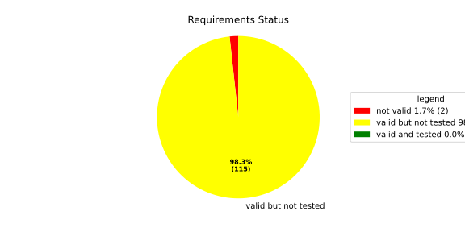
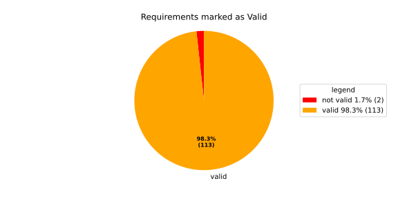
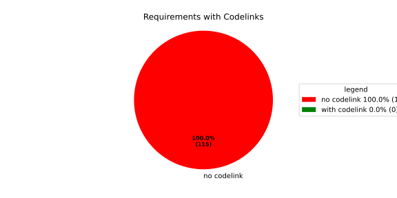

Component Requirements Statistics#
Overview#

In Detail#


No needs passed the filters
Failed Tests
Hint: This table should be empty. Before a PR can be merged all tests have to be successful.
No needs passed the filters
Skipped / Disabled Tests
No needs passed the filters
All passed Tests#
No needs passed the filters
Details About Testcases#
No needs passed the filters
No needs passed the filters
Test Log Files#
tests-report/score/health_monitor/src/rust/tests/test.log
exec ${PAGER:-/usr/bin/less} "$0" || exit 1
Executing tests from //score/health_monitor/src/rust:tests
-----------------------------------------------------------------------------
running 232 tests
test common::tests::duration_to_int_too_large - should panic ... ok
test common::tests::time_offset_diff_too_large - should panic ... ok
test common::tests::time_offset_valid ... ok
test common::tests::time_offset_wrong_order ... ok
test common::tests::time_range_from_interval_lower_too_large - should panic ... ok
test common::tests::time_range_from_interval_valid ... ok
test common::tests::time_range_new_valid ... ok
test common::tests::time_range_new_wrong_order - should panic ... ok
test deadline::common::tests::acquire_and_release_deadline ... ok
test deadline::common::tests::new_and_fields ... ok
test common::tests::duration_to_int_valid ... ok
test deadline::deadline_monitor::tests::deadline_failed_on_first_run_and_then_restarted_is_evaluated_as_error ... ok
test deadline::deadline_monitor::tests::deadline_outside_time_range_is_error_when_dropped_after_evaluate ... ok
test deadline::common::tests::concurrent_acquire ... ok
test deadline::deadline_monitor::tests::get_deadline_unknown_tag ... ok
test deadline::deadline_monitor::tests::start_stop_deadline_outside_ranges_is_evaluated_as_error ... ok
test deadline::deadline_monitor::tests::start_stop_deadline_outside_ranges_is_error_when_dropped_before_evaluate ... ok
test deadline::deadline_state::tests::as_u64_and_new ... ok
test deadline::deadline_state::tests::deadline_state_default_and_snapshot ... ok
test deadline::deadline_state::tests::deadline_state_update_none_returns_err ... ok
test deadline::deadline_state::tests::default_state ... ok
test deadline::deadline_state::tests::set_and_get_timestamp_ms ... ok
test deadline::deadline_state::tests::deadline_state_update_success ... ok
test deadline::deadline_state::tests::set_running ... ok
test deadline::deadline_state::tests::set_underrun ... ok
test deadline::ffi::tests::deadline_destroy_null_deadline ... ok
test deadline::ffi::tests::deadline_monitor_builder_add_deadline_invalid_range ... ok
test deadline::ffi::tests::deadline_monitor_builder_add_deadline_null_builder ... ok
test deadline::ffi::tests::deadline_monitor_builder_add_deadline_null_deadline_tag ... ok
test deadline::ffi::tests::deadline_monitor_builder_add_deadline_succeeds ... ok
test deadline::ffi::tests::deadline_monitor_builder_create_null_builder ... ok
test deadline::ffi::tests::deadline_monitor_builder_create_succeeds ... ok
test deadline::ffi::tests::deadline_monitor_builder_destroy_null_builder ... ok
test deadline::ffi::tests::deadline_monitor_destroy_null_monitor ... ok
test deadline::ffi::tests::deadline_monitor_get_deadline_null_deadline_handle ... ok
test deadline::ffi::tests::deadline_monitor_get_deadline_null_deadline_tag ... ok
test deadline::ffi::tests::deadline_monitor_get_deadline_null_monitor ... ok
test deadline::ffi::tests::deadline_monitor_get_deadline_unknown_deadline ... ok
test deadline::ffi::tests::deadline_monitor_get_deadline_succeeds ... ok
test deadline::ffi::tests::deadline_start_already_started ... ok
test deadline::ffi::tests::deadline_start_null_deadline ... ok
test deadline::ffi::tests::deadline_stop_null_deadline ... ok
test deadline::ffi::tests::deadline_start_succeeds ... ok
test deadline::ffi::tests::deadline_stop_succeeds ... ok
test ffi::tests::health_monitor_builder_add_deadline_monitor_null_deadline_monitor_builder ... ok
test ffi::tests::health_monitor_builder_add_deadline_monitor_null_hmon_builder ... ok
test ffi::tests::health_monitor_builder_add_deadline_monitor_null_monitor_tag ... ok
test ffi::tests::health_monitor_builder_add_deadline_monitor_succeeds ... ok
test ffi::tests::health_monitor_builder_add_heartbeat_monitor_null_hmon_builder ... ok
test ffi::tests::health_monitor_builder_add_heartbeat_monitor_null_heartbeat_monitor_builder ... ok
test ffi::tests::health_monitor_builder_add_heartbeat_monitor_null_monitor_tag ... ok
test ffi::tests::health_monitor_builder_add_heartbeat_monitor_succeeds ... ok
test ffi::tests::health_monitor_builder_add_logic_monitor_null_hmon_builder ... ok
test ffi::tests::health_monitor_builder_add_logic_monitor_null_logic_monitor_builder ... ok
test ffi::tests::health_monitor_builder_add_logic_monitor_null_monitor_tag ... ok
test ffi::tests::health_monitor_builder_add_logic_monitor_succeeds ... ok
test ffi::tests::health_monitor_builder_build_invalid_cycle_intervals ... ok
test ffi::tests::health_monitor_builder_build_no_monitors ... ok
test ffi::tests::health_monitor_builder_build_null_builder_handle ... ok
test ffi::tests::health_monitor_builder_build_null_monitor_handle ... ok
test ffi::tests::health_monitor_builder_build_succeeds ... ok
test ffi::tests::health_monitor_builder_build_thread_parameters ... ok
test ffi::tests::health_monitor_builder_build_valid_cycle_intervals_succeeds ... ok
test ffi::tests::health_monitor_builder_create_null_handle ... ok
test ffi::tests::health_monitor_builder_create_succeeds ... ok
test ffi::tests::health_monitor_builder_destroy_null_handle ... ok
test ffi::tests::health_monitor_destroy_null_hmon ... ok
test ffi::tests::health_monitor_get_deadline_monitor_already_taken ... ok
test ffi::tests::health_monitor_get_deadline_monitor_null_deadline_monitor ... ok
test ffi::tests::health_monitor_get_deadline_monitor_null_hmon ... ok
test ffi::tests::health_monitor_get_deadline_monitor_null_monitor_tag ... ok
test ffi::tests::health_monitor_get_deadline_monitor_succeeds ... ok
test ffi::tests::health_monitor_get_heartbeat_monitor_already_taken ... ok
test ffi::tests::health_monitor_get_heartbeat_monitor_null_heartbeat_monitor ... ok
test ffi::tests::health_monitor_get_heartbeat_monitor_null_monitor_tag ... ok
test ffi::tests::health_monitor_get_heartbeat_monitor_null_hmon ... ok
test ffi::tests::health_monitor_get_heartbeat_monitor_succeeds ... ok
test ffi::tests::health_monitor_get_logic_monitor_already_taken ... ok
test ffi::tests::health_monitor_get_logic_monitor_null_hmon ... ok
test ffi::tests::health_monitor_get_logic_monitor_null_logic_monitor ... ok
test ffi::tests::health_monitor_get_logic_monitor_null_monitor_tag ... ok
test ffi::tests::health_monitor_get_logic_monitor_succeeds ... ok
test ffi::tests::health_monitor_start_null_hmon ... ok
test ffi::tests::health_monitor_start_monitor_not_taken ... ok
test health_monitor::tests::health_monitor_builder_build_invalid_cycles ... ok
test health_monitor::tests::health_monitor_builder_build_no_monitors ... ok
test health_monitor::tests::health_monitor_builder_build_succeeds ... ok
test health_monitor::tests::health_monitor_builder_new_succeeds ... ok
test health_monitor::tests::health_monitor_get_deadline_monitor_available ... ok
test health_monitor::tests::health_monitor_get_deadline_monitor_invalid_state ... ok
test health_monitor::tests::health_monitor_get_deadline_monitor_taken ... ok
test health_monitor::tests::health_monitor_get_deadline_monitor_unknown ... ok
test health_monitor::tests::health_monitor_get_heartbeat_monitor_available ... ok
test health_monitor::tests::health_monitor_get_heartbeat_monitor_invalid_state ... ok
test health_monitor::tests::health_monitor_get_heartbeat_monitor_taken ... ok
test health_monitor::tests::health_monitor_get_heartbeat_monitor_unknown ... ok
test health_monitor::tests::health_monitor_get_logic_monitor_available ... ok
test health_monitor::tests::health_monitor_get_logic_monitor_invalid_state ... ok
[2026/06/01 13:07:08.7969051][7815][HMON][INFO] Monitoring thread started.
[2026/06/01 13:07:08.7969244][7815][HMON][INFO] Monitoring thread exiting.
test ffi::tests::health_monitor_start_succeeds ... ok
test health_monitor::tests::health_monitor_get_logic_monitor_taken ... ok
test health_monitor::tests::health_monitor_get_logic_monitor_unknown ... ok
[2026/06/01 13:07:08.7984349][7815][HMON][INFO] Monitoring thread started.
[2026/06/01 13:07:08.7984505][7815][HMON][INFO] Monitoring thread exiting.
test health_monitor::tests::health_monitor_start_monitors_not_taken - should panic ... ok
test health_monitor::tests::health_monitor_start_succeeds ... ok
test heartbeat::ffi::tests::heartbeat_monitor_builder_create_invalid_range ... ok
test heartbeat::ffi::tests::heartbeat_monitor_builder_create_null_builder ... ok
test heartbeat::ffi::tests::heartbeat_monitor_builder_create_succeeds ... ok
test heartbeat::ffi::tests::heartbeat_monitor_builder_destroy_null_builder ... ok
test heartbeat::ffi::tests::heartbeat_monitor_heartbeat_null_monitor ... ok
test heartbeat::ffi::tests::heartbeat_monitor_heartbeat_succeeds ... ok
test heartbeat::ffi::tests::heartbeat_monitor_destroy_null_monitor ... ok
test deadline::deadline_monitor::tests::monitor_with_multiple_running_deadlines ... ok
test heartbeat::heartbeat_monitor::tests::heartbeat_monitor_beat_early_evaluate_early ... ok
test heartbeat::heartbeat_monitor::tests::heartbeat_monitor_beat_early_evaluate_in_range ... ok
test heartbeat::heartbeat_monitor::tests::heartbeat_monitor_beat_in_range_evaluate_in_range ... ok
test heartbeat::heartbeat_monitor::tests::heartbeat_monitor_beat_early_evaluate_late ... ok
test heartbeat::heartbeat_monitor::tests::heartbeat_monitor_builder_build_invalid_internal_processing_cycle ... ok
test heartbeat::heartbeat_monitor::tests::heartbeat_monitor_builder_build_ok ... ok
test heartbeat::heartbeat_monitor::tests::heartbeat_monitor_beat_in_range_evaluate_late ... ok
test heartbeat::heartbeat_monitor::tests::heartbeat_monitor_beat_late_evaluate_late ... ok
test heartbeat::heartbeat_monitor::tests::heartbeat_monitor_cycle_early ... ok
test heartbeat::heartbeat_monitor::tests::heartbeat_monitor_multiple_beats_early_evaluate_early ... ok
test heartbeat::heartbeat_monitor::tests::heartbeat_monitor_cycle_in_range ... ok
test heartbeat::heartbeat_monitor::tests::heartbeat_monitor_multiple_beats_early_evaluate_in_range ... ok
test heartbeat::heartbeat_monitor::tests::heartbeat_monitor_multiple_beats_in_range_evaluate_in_range ... ok
test heartbeat::heartbeat_monitor::tests::heartbeat_monitor_cycle_late ... ok
test heartbeat::heartbeat_monitor::tests::heartbeat_monitor_multiple_beats_early_evaluate_late ... ok
test heartbeat::heartbeat_monitor::tests::heartbeat_monitor_no_beat_evaluate_early ... ok
test heartbeat::heartbeat_monitor::tests::heartbeat_monitor_no_beat_evaluate_in_range ... ok
test heartbeat::heartbeat_monitor::tests::heartbeat_monitor_multiple_beats_in_range_evaluate_late ... ok
test heartbeat::heartbeat_monitor::tests::heartbeat_monitor_multiple_beats_late_evaluate_late ... ok
test heartbeat::heartbeat_state::tests::snapshot_counter_increment ... ok
test heartbeat::heartbeat_state::tests::snapshot_default ... ok
test heartbeat::heartbeat_state::tests::snapshot_from_u64_max ... ok
test heartbeat::heartbeat_state::tests::snapshot_from_u64_valid ... ok
test heartbeat::heartbeat_state::tests::snapshot_from_u64_zero ... ok
test heartbeat::heartbeat_state::tests::snapshot_new_succeeds ... ok
test heartbeat::heartbeat_state::tests::snapshot_set_heartbeat_timestamp_out_of_range - should panic ... ok
test heartbeat::heartbeat_state::tests::snapshot_set_heartbeat_timestamp_valid ... ok
test heartbeat::heartbeat_state::tests::state_default ... ok
test heartbeat::heartbeat_state::tests::state_new ... ok
test heartbeat::heartbeat_state::tests::state_reset ... ok
test heartbeat::heartbeat_state::tests::state_snapshot ... ok
test heartbeat::heartbeat_state::tests::state_update_none ... ok
test heartbeat::heartbeat_state::tests::state_update_some ... ok
test logic::ffi::tests::logic_monitor_builder_add_state_null_allowed_states_many_elements ... ok
test logic::ffi::tests::logic_monitor_builder_add_state_null_allowed_states_zero_elements ... ok
test logic::ffi::tests::logic_monitor_builder_add_state_null_builder ... ok
test logic::ffi::tests::logic_monitor_builder_add_state_null_tag ... ok
test logic::ffi::tests::logic_monitor_builder_add_state_succeeds ... ok
test logic::ffi::tests::logic_monitor_builder_create_null_builder ... ok
test logic::ffi::tests::logic_monitor_builder_create_null_initial_state ... ok
test logic::ffi::tests::logic_monitor_builder_create_succeeds ... ok
test logic::ffi::tests::logic_monitor_builder_destroy_null_builder ... ok
test logic::ffi::tests::logic_monitor_destroy_null_monitor ... ok
test logic::ffi::tests::logic_monitor_state_fails ... ok
test logic::ffi::tests::logic_monitor_state_null_monitor ... ok
test logic::ffi::tests::logic_monitor_state_null_state ... ok
test logic::ffi::tests::logic_monitor_state_succeeds ... ok
test logic::ffi::tests::logic_monitor_transition_fails ... ok
test logic::ffi::tests::logic_monitor_transition_null_monitor ... ok
test logic::ffi::tests::logic_monitor_transition_null_target_state ... ok
test logic::ffi::tests::logic_monitor_transition_succeeds ... ok
test logic::logic_monitor::tests::logic_monitor_builder_build_no_states ... ok
test logic::logic_monitor::tests::logic_monitor_builder_build_succeeds ... ok
test logic::logic_monitor::tests::logic_monitor_builder_build_undefined_initial_state ... ok
test logic::logic_monitor::tests::logic_monitor_builder_build_undefined_target ... ok
test logic::logic_monitor::tests::logic_monitor_builder_new_succeeds ... ok
test logic::logic_monitor::tests::logic_monitor_evaluate_invalid_state ... ok
test logic::logic_monitor::tests::logic_monitor_evaluate_invalid_transition ... ok
test logic::logic_monitor::tests::logic_monitor_evaluate_succeeds ... ok
test logic::logic_monitor::tests::logic_monitor_state_indeterminate_current_state ... ok
test logic::logic_monitor::tests::logic_monitor_state_succeeds ... ok
test logic::logic_monitor::tests::logic_monitor_transition_indeterminate_current_state ... ok
test logic::logic_monitor::tests::logic_monitor_transition_invalid_transition ... ok
test logic::logic_monitor::tests::logic_monitor_transition_succeeds ... ok
test logic::logic_monitor::tests::logic_monitor_transition_unknown_node ... ok
test logic::logic_state::tests::snapshot_from_u64_max ... ok
test logic::logic_state::tests::snapshot_from_u64_valid ... ok
test logic::logic_state::tests::snapshot_from_u64_zero ... ok
test logic::logic_state::tests::snapshot_new_succeeds ... ok
test logic::logic_state::tests::snapshot_set_current_state_index_valid ... ok
test logic::logic_state::tests::snapshot_set_heartbeat_timestamp_out_of_range - should panic ... ok
test logic::logic_state::tests::snapshot_set_monitor_status_valid ... ok
test logic::logic_state::tests::state_new ... ok
test logic::logic_state::tests::state_snapshot ... ok
test logic::logic_state::tests::state_swap ... ok
test tag::tests::deadline_tag_debug ... ok
test tag::tests::deadline_tag_from_str ... ok
test tag::tests::deadline_tag_from_string ... ok
test tag::tests::deadline_tag_new ... ok
test tag::tests::deadline_tag_score_debug ... ok
test tag::tests::monitor_tag_debug ... ok
test tag::tests::monitor_tag_from_str ... ok
test tag::tests::monitor_tag_from_string ... ok
test tag::tests::monitor_tag_new ... ok
test tag::tests::monitor_tag_score_debug ... ok
test tag::tests::state_tag_debug ... ok
test tag::tests::state_tag_from_str ... ok
test tag::tests::state_tag_from_string ... ok
test tag::tests::state_tag_new ... ok
test tag::tests::state_tag_score_debug ... ok
test tag::tests::tag_debug ... ok
test tag::tests::tag_hash_is_eq ... ok
test tag::tests::tag_hash_is_ne ... ok
test tag::tests::tag_new ... ok
test tag::tests::tag_partial_eq_is_eq ... ok
test tag::tests::tag_partial_eq_is_ne ... ok
test tag::tests::tag_score_debug ... ok
test tag::tests::test_from_str ... ok
test tag::tests::test_from_string ... ok
test thread_ffi::tests::scheduler_policy_priority_max_null_priority ... ok
test thread_ffi::tests::scheduler_policy_priority_max_succeeds ... ok
test thread_ffi::tests::scheduler_policy_priority_min_null_priority ... ok
test thread_ffi::tests::scheduler_policy_priority_min_succeeds ... ok
test thread_ffi::tests::thread_parameters_affinity_null_affinity_many_elements ... ok
test thread_ffi::tests::thread_parameters_affinity_null_affinity_zero_elements ... ok
test thread_ffi::tests::thread_parameters_affinity_null_handle ... ok
test thread_ffi::tests::thread_parameters_affinity_succeeds ... ok
test thread_ffi::tests::thread_parameters_create_succeeds ... ok
test thread_ffi::tests::thread_parameters_destroy_null_handle ... ok
test thread_ffi::tests::thread_parameters_scheduler_parameters_invalid_priority ... ok
test thread_ffi::tests::thread_parameters_scheduler_parameters_null_handle ... ok
test thread_ffi::tests::thread_parameters_scheduler_parameters_succeeds ... ok
test thread_ffi::tests::thread_parameters_stack_size_null_handle ... ok
test thread_ffi::tests::thread_parameters_stack_size_succeeds ... ok
test worker::tests::monitoring_logic_report_alive_on_each_call_when_no_error ... ok
test heartbeat::heartbeat_monitor::tests::heartbeat_monitor_no_beat_evaluate_late ... ok
test worker::tests::monitoring_logic_report_error_when_deadline_failed ... ok
[2026/06/01 13:07:09.7562980][7815][HMON][INFO] Monitoring thread started.
test deadline::deadline_monitor::tests::start_stop_deadline_within_range_works ... ok
[2026/06/01 13:07:09.8167115][7815][HMON][WARN] Deadline (DeadlineTag(deadline_fast)) missed! Expected: 50, now: 60
[2026/06/01 13:07:09.8167394][7815][HMON][WARN] Deadline monitor with tag MonitorTag(deadline_monitor) reported error: TooLate.
[2026/06/01 13:07:09.8167466][7815][HMON][WARN] One or more monitors reported errors, skipping AliveAPI notification.
[2026/06/01 13:07:09.8167535][7815][HMON][INFO] Monitoring logic failed, stopping thread.
[2026/06/01 13:07:09.8167586][7815][HMON][INFO] Monitoring thread exiting.
test worker::tests::monitoring_logic_report_alive_respect_cycle ... ok
test worker::tests::unique_thread_runner_monitoring_works ... ok
test heartbeat::heartbeat_monitor::tests::heartbeat_monitor_timestamp_offset ... ok
test result: ok. 232 passed; 0 failed; 0 ignored; 0 measured; 0 filtered out; finished in 1.27s
tests-report/score/health_monitor/src/rust/loom_tests/test.log
exec ${PAGER:-/usr/bin/less} "$0" || exit 1
Executing tests from //score/health_monitor/src/rust:loom_tests
-----------------------------------------------------------------------------
running 3 tests
test heartbeat::heartbeat_monitor::loom_tests::heartbeat_monitor_heartbeat_evaluate_too_early ... ok
test heartbeat::heartbeat_monitor::loom_tests::heartbeat_monitor_heartbeat_evaluate_in_range ... ok
test heartbeat::heartbeat_monitor::loom_tests::heartbeat_monitor_heartbeat_evaluate_too_late ... ok
test result: ok. 3 passed; 0 failed; 0 ignored; 0 measured; 0 filtered out; finished in 0.71s
tests-report/score/health_monitor/src/cpp/cpp_integration_tests/test.log
exec ${PAGER:-/usr/bin/less} "$0" || exit 1
Executing tests from //score/health_monitor/src/cpp:cpp_integration_tests
-----------------------------------------------------------------------------
Running main() from gmock_main.cc
[==========] Running 1 test from 1 test suite.
[----------] Global test environment set-up.
[----------] 1 test from HealthMonitorTest
[ RUN ] HealthMonitorTest.Integrated
[2026/06/02 10:03:24.2125604][score/health_monitor/src/rust/worker.rs:121][4935][HMON][INFO] Monitoring thread started.
[2026/06/02 10:03:24.2135799][score/health_monitor/src/rust/deadline/deadline_monitor.rs:217][4935][HMON][ERROR] Deadline DeadlineTag(deadline_1) stopped too early by 97 ms
[2026/06/02 10:03:24.2636728][score/health_monitor/src/rust/deadline/deadline_monitor.rs:267][4935][HMON][WARN] Deadline (DeadlineTag(deadline_1)) finished too early!
[2026/06/02 10:03:24.2637199][score/health_monitor/src/rust/worker.rs:58][4935][HMON][WARN] Deadline monitor with tag MonitorTag(deadline_monitor) reported error: TooEarly.
[2026/06/02 10:03:24.2637312][score/health_monitor/src/rust/heartbeat/heartbeat_monitor.rs:253][4935][HMON][WARN] Heartbeat occurred too early, offset to range: 102
[2026/06/02 10:03:24.2637379][score/health_monitor/src/rust/worker.rs:64][4935][HMON][WARN] Heartbeat monitor with tag MonitorTag(heartbeat_monitor) reported error: TooEarly.
[2026/06/02 10:03:24.2637449][score/health_monitor/src/rust/worker.rs:85][4935][HMON][WARN] One or more monitors reported errors, skipping AliveAPI notification.
[2026/06/02 10:03:24.2637506][score/health_monitor/src/rust/worker.rs:132][4935][HMON][INFO] Monitoring logic failed, stopping thread.
[2026/06/02 10:03:24.2637559][score/health_monitor/src/rust/worker.rs:139][4935][HMON][INFO] Monitoring thread exiting.
[ OK ] HealthMonitorTest.Integrated (56 ms)
[----------] 1 test from HealthMonitorTest (56 ms total)
[----------] Global test environment tear-down
[==========] 1 test from 1 test suite ran. (56 ms total)
[ PASSED ] 1 test.
tests-report/score/health_monitor/src/cpp/cpp_unit_tests/test.log
exec ${PAGER:-/usr/bin/less} "$0" || exit 1
Executing tests from //score/health_monitor/src/cpp:cpp_unit_tests
-----------------------------------------------------------------------------
Running main() from gmock_main.cc
[==========] Running 33 tests from 10 test suites.
[----------] Global test environment set-up.
[----------] 2 tests from DeadlineMonitorBuilder
[ RUN ] DeadlineMonitorBuilder.New_Succeeds
[ OK ] DeadlineMonitorBuilder.New_Succeeds (0 ms)
[ RUN ] DeadlineMonitorBuilder.AddDeadline_Succeeds
[ OK ] DeadlineMonitorBuilder.AddDeadline_Succeeds (0 ms)
[----------] 2 tests from DeadlineMonitorBuilder (0 ms total)
[----------] 2 tests from DeadlineMonitorFixture
[ RUN ] DeadlineMonitorFixture.GetDeadline_Succeeds
[ OK ] DeadlineMonitorFixture.GetDeadline_Succeeds (0 ms)
[ RUN ] DeadlineMonitorFixture.GetDeadline_Unknown
[ OK ] DeadlineMonitorFixture.GetDeadline_Unknown (0 ms)
[----------] 2 tests from DeadlineMonitorFixture (0 ms total)
[----------] 2 tests from DeadlineFixture
[ RUN ] DeadlineFixture.Start_Succeeds
[2026/06/02 10:03:25.4462421][score/health_monitor/src/rust/deadline/deadline_monitor.rs:217][4965][HMON][ERROR] Deadline DeadlineTag(deadline) stopped too early by 50 ms
[ OK ] DeadlineFixture.Start_Succeeds (0 ms)
[ RUN ] DeadlineFixture.Start_AlreadyRunning
[2026/06/02 10:03:25.4462876][score/health_monitor/src/rust/deadline/deadline_monitor.rs:217][4965][HMON][ERROR] Deadline DeadlineTag(deadline) stopped too early by 50 ms
[2026/06/02 10:03:25.4462946][score/health_monitor/src/rust/deadline/deadline_monitor.rs:172][4965][HMON][WARN] Trying to start deadline DeadlineTag(deadline) that already failed
[ OK ] DeadlineFixture.Start_AlreadyRunning (0 ms)
[----------] 2 tests from DeadlineFixture (0 ms total)
[----------] 4 tests from HealthMonitorBuilder
[ RUN ] HealthMonitorBuilder.New_Succeeds
[ OK ] HealthMonitorBuilder.New_Succeeds (0 ms)
[ RUN ] HealthMonitorBuilder.Build_Succeeds
[ OK ] HealthMonitorBuilder.Build_Succeeds (0 ms)
[ RUN ] HealthMonitorBuilder.Build_InvalidCycles
[2026/06/02 10:03:25.4463837][score/health_monitor/src/rust/health_monitor.rs:134][4965][HMON][ERROR] Supervisor API cycle duration (123 ms) must be a multiple of internal processing cycle interval (100 ms).
[ OK ] HealthMonitorBuilder.Build_InvalidCycles (0 ms)
[ RUN ] HealthMonitorBuilder.Build_NoMonitors
[2026/06/02 10:03:25.4464002][score/health_monitor/src/rust/health_monitor.rs:146][4965][HMON][ERROR] No monitors have been added. HealthMonitor cannot be created.
[ OK ] HealthMonitorBuilder.Build_NoMonitors (0 ms)
[----------] 4 tests from HealthMonitorBuilder (0 ms total)
[----------] 11 tests from HealthMonitor
[ RUN ] HealthMonitor.GetDeadlineMonitor_Available
[ OK ] HealthMonitor.GetDeadlineMonitor_Available (0 ms)
[ RUN ] HealthMonitor.GetDeadlineMonitor_Taken
[ OK ] HealthMonitor.GetDeadlineMonitor_Taken (0 ms)
[ RUN ] HealthMonitor.GetDeadlineMonitor_Unknown
[ OK ] HealthMonitor.GetDeadlineMonitor_Unknown (0 ms)
[ RUN ] HealthMonitor.GetHeartbeatMonitor_Available
[ OK ] HealthMonitor.GetHeartbeatMonitor_Available (0 ms)
[ RUN ] HealthMonitor.GetHeartbeatMonitor_Taken
[ OK ] HealthMonitor.GetHeartbeatMonitor_Taken (0 ms)
[ RUN ] HealthMonitor.GetHeartbeatMonitor_Unknown
[ OK ] HealthMonitor.GetHeartbeatMonitor_Unknown (0 ms)
[ RUN ] HealthMonitor.GetLogicMonitor_Available
[ OK ] HealthMonitor.GetLogicMonitor_Available (0 ms)
[ RUN ] HealthMonitor.GetLogicMonitor_Taken
[ OK ] HealthMonitor.GetLogicMonitor_Taken (0 ms)
[ RUN ] HealthMonitor.GetLogicMonitor_Unknown
[ OK ] HealthMonitor.GetLogicMonitor_Unknown (0 ms)
[ RUN ] HealthMonitor.Start_Succeeds
[2026/06/02 10:03:25.4466945][score/health_monitor/src/rust/worker.rs:121][4965][HMON][INFO] Monitoring thread started.
[2026/06/02 10:03:25.4467071][score/health_monitor/src/rust/worker.rs:139][4965][HMON][INFO] Monitoring thread exiting.
[ OK ] HealthMonitor.Start_Succeeds (0 ms)
[ RUN ] HealthMonitor.Start_MonitorsNotTaken
[2026/06/02 10:03:25.4474007][score/health_monitor/src/rust/health_monitor.rs:307][4970][HMON][ERROR] All monitors must be taken before starting HealthMonitor but MonitorTag(deadline_monitor) is not taken.
[ OK ] HealthMonitor.Start_MonitorsNotTaken (274 ms)
[----------] 11 tests from HealthMonitor (275 ms total)
[----------] 1 test from HeartbeatMonitorBuilder
[ RUN ] HeartbeatMonitorBuilder.New_Succeeds
[ OK ] HeartbeatMonitorBuilder.New_Succeeds (0 ms)
[----------] 1 test from HeartbeatMonitorBuilder (0 ms total)
[----------] 1 test from HeartbeatMonitor
[ RUN ] HeartbeatMonitor.Heartbeat_Succeeds
[ OK ] HeartbeatMonitor.Heartbeat_Succeeds (0 ms)
[----------] 1 test from HeartbeatMonitor (0 ms total)
[----------] 2 tests from LogicMonitorBuilder
[ RUN ] LogicMonitorBuilder.New_Succeeds
[ OK ] LogicMonitorBuilder.New_Succeeds (0 ms)
[ RUN ] LogicMonitorBuilder.AddState_Succeeds
[ OK ] LogicMonitorBuilder.AddState_Succeeds (0 ms)
[----------] 2 tests from LogicMonitorBuilder (0 ms total)
[----------] 5 tests from LogicMonitorFixture
[ RUN ] LogicMonitorFixture.Transition_Succeeds
[ OK ] LogicMonitorFixture.Transition_Succeeds (0 ms)
[ RUN ] LogicMonitorFixture.Transition_Unknown
[2026/06/02 10:03:25.7220515][score/health_monitor/src/rust/logic/logic_monitor.rs:265][4965][HMON][WARN] Requested state transition is invalid: StateTag(state1) -> StateTag(unknown)
[ OK ] LogicMonitorFixture.Transition_Unknown (0 ms)
[ RUN ] LogicMonitorFixture.Transition_Invalid
[2026/06/02 10:03:25.7220912][score/health_monitor/src/rust/logic/logic_monitor.rs:265][4965][HMON][WARN] Requested state transition is invalid: StateTag(state1) -> StateTag(unknown)
[2026/06/02 10:03:25.7220977][score/health_monitor/src/rust/logic/logic_monitor.rs:254][4965][HMON][WARN] Current logic monitor state cannot be determined
[ OK ] LogicMonitorFixture.Transition_Invalid (0 ms)
[ RUN ] LogicMonitorFixture.State_Succeeds
[ OK ] LogicMonitorFixture.State_Succeeds (0 ms)
[ RUN ] LogicMonitorFixture.State_Invalid
[2026/06/02 10:03:25.7221337][score/health_monitor/src/rust/logic/logic_monitor.rs:265][4965][HMON][WARN] Requested state transition is invalid: StateTag(state1) -> StateTag(unknown)
[2026/06/02 10:03:25.7221394][score/health_monitor/src/rust/logic/logic_monitor.rs:290][4965][HMON][WARN] Current logic monitor state cannot be determined
[ OK ] LogicMonitorFixture.State_Invalid (0 ms)
[----------] 5 tests from LogicMonitorFixture (0 ms total)
[----------] 3 tests from TimeRange
[ RUN ] TimeRange.New_Succeeds
[ OK ] TimeRange.New_Succeeds (0 ms)
[ RUN ] TimeRange.New_InvalidOrder
[ OK ] TimeRange.New_InvalidOrder (200 ms)
[ RUN ] TimeRange.MinMax
[ OK ] TimeRange.MinMax (0 ms)
[----------] 3 tests from TimeRange (200 ms total)
[----------] Global test environment tear-down
[==========] 33 tests from 10 test suites ran. (477 ms total)
[ PASSED ] 33 tests.
tests-report/score/launch_manager/daemon/src/process_state_client/process_state_client_ut/test.log
exec ${PAGER:-/usr/bin/less} "$0" || exit 1
Executing tests from //score/launch_manager/daemon/src/process_state_client:process_state_client_ut
-----------------------------------------------------------------------------
Running main() from gmock_main.cc
[==========] Running 4 tests from 1 test suite.
[----------] Global test environment set-up.
[----------] 4 tests from ProcessStateClient_UT
[ RUN ] ProcessStateClient_UT.ProcessStateClient_ConstructReceiver_Succeeds
[ OK ] ProcessStateClient_UT.ProcessStateClient_ConstructReceiver_Succeeds (0 ms)
[ RUN ] ProcessStateClient_UT.ProcessStateClient_QueueOneProcess_Succeeds
[ OK ] ProcessStateClient_UT.ProcessStateClient_QueueOneProcess_Succeeds (0 ms)
[ RUN ] ProcessStateClient_UT.ProcessStateClient_QueueMaxNumberOfProcesses_Succeeds
[ OK ] ProcessStateClient_UT.ProcessStateClient_QueueMaxNumberOfProcesses_Succeeds (8 ms)
[ RUN ] ProcessStateClient_UT.ProcessStateClient_QueueOneProcessTooMany_Fails
mw::log initialization error: Error No logging configuration files could be found. occurred with context information: Failed to load configuration files. Fallback to console logging.
2026/06/01 13:07:07.9227519 1538361 000 ECU1 NONE LM log error verbose 1 Failed to queue posix process
2026/06/01 13:07:07.9227520 1538363 000 ECU1 NONE LM log error verbose 1 ProcessStateReceiver::getNextChangedPosixProcess: Overflow occurred, will be reported as kCommunicationError
[ OK ] ProcessStateClient_UT.ProcessStateClient_QueueOneProcessTooMany_Fails (5 ms)
[----------] 4 tests from ProcessStateClient_UT (15 ms total)
[----------] Global test environment tear-down
[==========] 4 tests from 1 test suite ran. (15 ms total)
[ PASSED ] 4 tests.
tests-report/score/launch_manager/daemon/src/recovery_client/recovery_client_UT/test.log
exec ${PAGER:-/usr/bin/less} "$0" || exit 1
Executing tests from //score/launch_manager/daemon/src/recovery_client:recovery_client_UT
-----------------------------------------------------------------------------
Running main() from gmock_main.cc
[==========] Running 5 tests from 1 test suite.
[----------] Global test environment set-up.
[----------] 5 tests from RecoveryClientTest
[ RUN ] RecoveryClientTest.SendSingleRequest
[ OK ] RecoveryClientTest.SendSingleRequest (0 ms)
[ RUN ] RecoveryClientTest.GetNextRequest
[ OK ] RecoveryClientTest.GetNextRequest (0 ms)
[ RUN ] RecoveryClientTest.GetNextRequestEmpty
[ OK ] RecoveryClientTest.GetNextRequestEmpty (0 ms)
[ RUN ] RecoveryClientTest.RingBufferFull
[ OK ] RecoveryClientTest.RingBufferFull (0 ms)
[ RUN ] RecoveryClientTest.FIFOOrdering
[ OK ] RecoveryClientTest.FIFOOrdering (0 ms)
[----------] 5 tests from RecoveryClientTest (0 ms total)
[----------] Global test environment tear-down
[==========] 5 tests from 1 test suite ran. (0 ms total)
[ PASSED ] 5 tests.
tests-report/score/launch_manager/daemon/src/alive_monitor/details/recovery/Notification_UT/test.log
exec ${PAGER:-/usr/bin/less} "$0" || exit 1
Executing tests from //score/launch_manager/daemon/src/alive_monitor/details/recovery:Notification_UT
-----------------------------------------------------------------------------
Running main() from gmock_main.cc
[==========] Running 5 tests from 2 test suites.
[----------] Global test environment set-up.
[----------] 4 tests from NotificationWithConfigTest
[ RUN ] NotificationWithConfigTest.CanGetNotificationName
mw::log initialization error: Error No logging configuration files could be found. occurred with context information: Failed to load configuration files. Fallback to console logging.
[ OK ] NotificationWithConfigTest.CanGetNotificationName (3 ms)
[ RUN ] NotificationWithConfigTest.SendsRequestAndNeverTimesOut
[ OK ] NotificationWithConfigTest.SendsRequestAndNeverTimesOut (0 ms)
[ RUN ] NotificationWithConfigTest.TimesOutWhenSendingRequestFails
2026/06/01 13:07:07.9227947 1542634 000 ECU1 NONE Rcvy log error verbose 2 Notification (TestNotification) Failed to enqueue recovery request (ring buffer full)
[ OK ] NotificationWithConfigTest.TimesOutWhenSendingRequestFails (1 ms)
[ RUN ] NotificationWithConfigTest.ProxyInitializationFails
2026/06/01 13:07:07.9227947 1542641 000 ECU1 NONE Rcvy log error verbose 3 Notification (TestNotification) Invalid ProcessGroupState identifier: InvalidIdentifier
[ OK ] NotificationWithConfigTest.ProxyInitializationFails (0 ms)
[----------] 4 tests from NotificationWithConfigTest (6 ms total)
[----------] 1 test from NotificationWithoutConfigTest
[ RUN ] NotificationWithoutConfigTest.WatchdogNotificationGoesDirectlyToTimeout
[ OK ] NotificationWithoutConfigTest.WatchdogNotificationGoesDirectlyToTimeout (1 ms)
[----------] 1 test from NotificationWithoutConfigTest (2 ms total)
[----------] Global test environment tear-down
[==========] 5 tests from 2 test suites ran. (10 ms total)
[ PASSED ] 5 tests.
tests-report/score/launch_manager/daemon/src/common/identifier_hash_UT/test.log
exec ${PAGER:-/usr/bin/less} "$0" || exit 1
Executing tests from //score/launch_manager/daemon/src/common:identifier_hash_UT
-----------------------------------------------------------------------------
Running main() from gmock_main.cc
[==========] Running 7 tests from 1 test suite.
[----------] Global test environment set-up.
[----------] 7 tests from IdentifierHashTest
[ RUN ] IdentifierHashTest.IdentifierHash_with_string_view_created
[ OK ] IdentifierHashTest.IdentifierHash_with_string_view_created (0 ms)
[ RUN ] IdentifierHashTest.IdentifierHash_with_string_created
[ OK ] IdentifierHashTest.IdentifierHash_with_string_created (0 ms)
[ RUN ] IdentifierHashTest.IdentifierHash_default_created
[ OK ] IdentifierHashTest.IdentifierHash_default_created (0 ms)
[ RUN ] IdentifierHashTest.IdentifierHash_invalid_hash_no_string_representation
[ OK ] IdentifierHashTest.IdentifierHash_invalid_hash_no_string_representation (0 ms)
[ RUN ] IdentifierHashTest.IdentifierHash_no_dangling_pointer_after_source_string_dies
[ OK ] IdentifierHashTest.IdentifierHash_no_dangling_pointer_after_source_string_dies (0 ms)
[ RUN ] IdentifierHashTest.IdentifierHash_EqualityOperators
[ OK ] IdentifierHashTest.IdentifierHash_EqualityOperators (0 ms)
[ RUN ] IdentifierHashTest.IdentifierHash_LessThanOperator
[ OK ] IdentifierHashTest.IdentifierHash_LessThanOperator (0 ms)
[----------] 7 tests from IdentifierHashTest (0 ms total)
[----------] Global test environment tear-down
[==========] 7 tests from 1 test suite ran. (0 ms total)
[ PASSED ] 7 tests.
tests-report/score/launch_manager/daemon/src/common/concurrency/mpmc_concurrent_queue_tsan_test/test.log
exec ${PAGER:-/usr/bin/less} "$0" || exit 1
Executing tests from //score/launch_manager/daemon/src/common/concurrency:mpmc_concurrent_queue_tsan_test
-----------------------------------------------------------------------------
Running main() from gmock_main.cc
[==========] Running 15 tests from 5 test suites.
[----------] Global test environment set-up.
[----------] 5 tests from MPMCConcurrentQueueTest_Basic
[ RUN ] MPMCConcurrentQueueTest_Basic.PushAndPopSingleItem
[ OK ] MPMCConcurrentQueueTest_Basic.PushAndPopSingleItem (0 ms)
[ RUN ] MPMCConcurrentQueueTest_Basic.PushAndPopPreservesOrder
[ OK ] MPMCConcurrentQueueTest_Basic.PushAndPopPreservesOrder (0 ms)
[ RUN ] MPMCConcurrentQueueTest_Basic.LvaluePushCopiesItem
[ OK ] MPMCConcurrentQueueTest_Basic.LvaluePushCopiesItem (0 ms)
[ RUN ] MPMCConcurrentQueueTest_Basic.RvaluePushWorksWithMoveOnlyType
[ OK ] MPMCConcurrentQueueTest_Basic.RvaluePushWorksWithMoveOnlyType (0 ms)
[ RUN ] MPMCConcurrentQueueTest_Basic.PopReturnsNulloptOnSemaphoreWaitFailure
[ OK ] MPMCConcurrentQueueTest_Basic.PopReturnsNulloptOnSemaphoreWaitFailure (20 ms)
[----------] 5 tests from MPMCConcurrentQueueTest_Basic (21 ms total)
[----------] 2 tests from MPMCConcurrentQueueTest_Timeout
[ RUN ] MPMCConcurrentQueueTest_Timeout.PushWithTimeoutSucceedsWhenSlotAvailable
[ OK ] MPMCConcurrentQueueTest_Timeout.PushWithTimeoutSucceedsWhenSlotAvailable (0 ms)
[ RUN ] MPMCConcurrentQueueTest_Timeout.PushWithTimeoutReturnsFalseWhenFull
[ OK ] MPMCConcurrentQueueTest_Timeout.PushWithTimeoutReturnsFalseWhenFull (20 ms)
[----------] 2 tests from MPMCConcurrentQueueTest_Timeout (20 ms total)
[----------] 3 tests from MPMCConcurrentQueueTest_Stop
[ RUN ] MPMCConcurrentQueueTest_Stop.PushReturnsFalseAfterStop
[ OK ] MPMCConcurrentQueueTest_Stop.PushReturnsFalseAfterStop (0 ms)
[ RUN ] MPMCConcurrentQueueTest_Stop.PopReturnsNulloptWhenStoppedAndEmpty
[ OK ] MPMCConcurrentQueueTest_Stop.PopReturnsNulloptWhenStoppedAndEmpty (0 ms)
[ RUN ] MPMCConcurrentQueueTest_Stop.ItemsAreDroppedAfterStop
[ OK ] MPMCConcurrentQueueTest_Stop.ItemsAreDroppedAfterStop (0 ms)
[----------] 3 tests from MPMCConcurrentQueueTest_Stop (0 ms total)
[----------] 4 tests from MPMCConcurrentQueueTest_Blocking
[ RUN ] MPMCConcurrentQueueTest_Blocking.PopBlocksUntilItemAvailable
[ OK ] MPMCConcurrentQueueTest_Blocking.PopBlocksUntilItemAvailable (0 ms)
[ RUN ] MPMCConcurrentQueueTest_Blocking.PushBlocksWhenFull
[ OK ] MPMCConcurrentQueueTest_Blocking.PushBlocksWhenFull (0 ms)
[ RUN ] MPMCConcurrentQueueTest_Blocking.StopUnblocksBlockedConsumer
[ OK ] MPMCConcurrentQueueTest_Blocking.StopUnblocksBlockedConsumer (0 ms)
[ RUN ] MPMCConcurrentQueueTest_Blocking.StopUnblocksBlockedProducer
[ OK ] MPMCConcurrentQueueTest_Blocking.StopUnblocksBlockedProducer (0 ms)
[----------] 4 tests from MPMCConcurrentQueueTest_Blocking (0 ms total)
[----------] 1 test from MPMCConcurrentQueueTest_MPMC
[ RUN ] MPMCConcurrentQueueTest_MPMC.AllItemsDelivered
[ OK ] MPMCConcurrentQueueTest_MPMC.AllItemsDelivered (1 ms)
[----------] 1 test from MPMCConcurrentQueueTest_MPMC (1 ms total)
[----------] Global test environment tear-down
[==========] 15 tests from 5 test suites ran. (45 ms total)
[ PASSED ] 15 tests.
tests-report/score/launch_manager/daemon/src/common/concurrency/mpmc_concurrent_queue_test/test.log
exec ${PAGER:-/usr/bin/less} "$0" || exit 1
Executing tests from //score/launch_manager/daemon/src/common/concurrency:mpmc_concurrent_queue_test
-----------------------------------------------------------------------------
Running main() from gmock_main.cc
[==========] Running 15 tests from 5 test suites.
[----------] Global test environment set-up.
[----------] 5 tests from MPMCConcurrentQueueTest_Basic
[ RUN ] MPMCConcurrentQueueTest_Basic.PushAndPopSingleItem
[ OK ] MPMCConcurrentQueueTest_Basic.PushAndPopSingleItem (0 ms)
[ RUN ] MPMCConcurrentQueueTest_Basic.PushAndPopPreservesOrder
[ OK ] MPMCConcurrentQueueTest_Basic.PushAndPopPreservesOrder (0 ms)
[ RUN ] MPMCConcurrentQueueTest_Basic.LvaluePushCopiesItem
[ OK ] MPMCConcurrentQueueTest_Basic.LvaluePushCopiesItem (0 ms)
[ RUN ] MPMCConcurrentQueueTest_Basic.RvaluePushWorksWithMoveOnlyType
[ OK ] MPMCConcurrentQueueTest_Basic.RvaluePushWorksWithMoveOnlyType (0 ms)
[ RUN ] MPMCConcurrentQueueTest_Basic.PopReturnsNulloptOnSemaphoreWaitFailure
[ OK ] MPMCConcurrentQueueTest_Basic.PopReturnsNulloptOnSemaphoreWaitFailure (20 ms)
[----------] 5 tests from MPMCConcurrentQueueTest_Basic (20 ms total)
[----------] 2 tests from MPMCConcurrentQueueTest_Timeout
[ RUN ] MPMCConcurrentQueueTest_Timeout.PushWithTimeoutSucceedsWhenSlotAvailable
[ OK ] MPMCConcurrentQueueTest_Timeout.PushWithTimeoutSucceedsWhenSlotAvailable (0 ms)
[ RUN ] MPMCConcurrentQueueTest_Timeout.PushWithTimeoutReturnsFalseWhenFull
[ OK ] MPMCConcurrentQueueTest_Timeout.PushWithTimeoutReturnsFalseWhenFull (20 ms)
[----------] 2 tests from MPMCConcurrentQueueTest_Timeout (20 ms total)
[----------] 3 tests from MPMCConcurrentQueueTest_Stop
[ RUN ] MPMCConcurrentQueueTest_Stop.PushReturnsFalseAfterStop
[ OK ] MPMCConcurrentQueueTest_Stop.PushReturnsFalseAfterStop (0 ms)
[ RUN ] MPMCConcurrentQueueTest_Stop.PopReturnsNulloptWhenStoppedAndEmpty
[ OK ] MPMCConcurrentQueueTest_Stop.PopReturnsNulloptWhenStoppedAndEmpty (0 ms)
[ RUN ] MPMCConcurrentQueueTest_Stop.ItemsAreDroppedAfterStop
[ OK ] MPMCConcurrentQueueTest_Stop.ItemsAreDroppedAfterStop (0 ms)
[----------] 3 tests from MPMCConcurrentQueueTest_Stop (0 ms total)
[----------] 4 tests from MPMCConcurrentQueueTest_Blocking
[ RUN ] MPMCConcurrentQueueTest_Blocking.PopBlocksUntilItemAvailable
[ OK ] MPMCConcurrentQueueTest_Blocking.PopBlocksUntilItemAvailable (0 ms)
[ RUN ] MPMCConcurrentQueueTest_Blocking.PushBlocksWhenFull
[ OK ] MPMCConcurrentQueueTest_Blocking.PushBlocksWhenFull (0 ms)
[ RUN ] MPMCConcurrentQueueTest_Blocking.StopUnblocksBlockedConsumer
[ OK ] MPMCConcurrentQueueTest_Blocking.StopUnblocksBlockedConsumer (0 ms)
[ RUN ] MPMCConcurrentQueueTest_Blocking.StopUnblocksBlockedProducer
[ OK ] MPMCConcurrentQueueTest_Blocking.StopUnblocksBlockedProducer (0 ms)
[----------] 4 tests from MPMCConcurrentQueueTest_Blocking (0 ms total)
[----------] 1 test from MPMCConcurrentQueueTest_MPMC
[ RUN ] MPMCConcurrentQueueTest_MPMC.AllItemsDelivered
[ OK ] MPMCConcurrentQueueTest_MPMC.AllItemsDelivered (0 ms)
[----------] 1 test from MPMCConcurrentQueueTest_MPMC (0 ms total)
[----------] Global test environment tear-down
[==========] 15 tests from 5 test suites ran. (42 ms total)
[ PASSED ] 15 tests.
tests-report/tests/integration/smoke/smoke/test.log
exec ${PAGER:-/usr/bin/less} "$0" || exit 1
Executing tests from //tests/integration/smoke:smoke
-----------------------------------------------------------------------------
============================= test session starts ==============================
platform linux -- Python 3.12.12, pytest-9.0.3, pluggy-1.5.0
rootdir: /home/runner/.bazel/sandbox/processwrapper-sandbox/856/execroot/_main/bazel-out/k8-fastbuild/bin/tests/integration/smoke/smoke.runfiles/score_itf+
configfile: pytest.ini
collected 1 item
../score_itf+::test_smoke
-------------------------------- live log setup --------------------------------
[2026-06-01 13:07:00.142] [INFO] [score.itf.plugins.docker] Executing custom image bootstrap command: tests/utils/environments/x86_64-linux/x86_64-linux.sh
[2026-06-01 13:07:02.713] [DEBUG] [docker.utils.config] Trying paths: ['/home/runner/.docker/config.json', '/home/runner/.dockercfg']
[2026-06-01 13:07:02.713] [DEBUG] [docker.utils.config] Found file at path: /home/runner/.docker/config.json
[2026-06-01 13:07:02.713] [DEBUG] [docker.auth] Found 'auths' section
[2026-06-01 13:07:02.713] [DEBUG] [docker.auth] Found entry (registry='https://index.docker.io/v1/', username='githubactions')
[2026-06-01 13:07:02.724] [DEBUG] [urllib3.connectionpool] http://localhost:None "GET /version HTTP/1.1" 200 823
[2026-06-01 13:07:05.590] [DEBUG] [urllib3.connectionpool] http://localhost:None "POST /v1.48/containers/create HTTP/1.1" 201 88
[2026-06-01 13:07:05.593] [DEBUG] [urllib3.connectionpool] http://localhost:None "GET /v1.48/containers/5f0d79cd74d4f3eb53ef7f867979b432f115a4f514c09f3b364ca7c1d1cf3215/json HTTP/1.1" 200 None
[2026-06-01 13:07:05.837] [DEBUG] [urllib3.connectionpool] http://localhost:None "POST /v1.48/containers/5f0d79cd74d4f3eb53ef7f867979b432f115a4f514c09f3b364ca7c1d1cf3215/start HTTP/1.1" 204 0
[2026-06-01 13:07:05.838] [DEBUG] [docker.utils.config] Trying paths: ['/home/runner/.docker/config.json', '/home/runner/.dockercfg']
[2026-06-01 13:07:05.838] [DEBUG] [docker.utils.config] Found file at path: /home/runner/.docker/config.json
[2026-06-01 13:07:05.838] [DEBUG] [docker.auth] Found 'auths' section
[2026-06-01 13:07:05.838] [DEBUG] [docker.auth] Found entry (registry='https://index.docker.io/v1/', username='githubactions')
[2026-06-01 13:07:05.857] [DEBUG] [urllib3.connectionpool] http://localhost:None "GET /version HTTP/1.1" 200 823
[2026-06-01 13:07:05.860] [DEBUG] [urllib3.connectionpool] http://localhost:None "POST /v1.48/containers/5f0d79cd74d4f3eb53ef7f867979b432f115a4f514c09f3b364ca7c1d1cf3215/exec HTTP/1.1" 201 74
[2026-06-01 13:07:05.863] [DEBUG] [urllib3.connectionpool] http://localhost:None "POST /v1.48/exec/9f3bec0041c03c049474ade55618381964b59b2a7d7dfc264f94e801296c174f/start HTTP/1.1" 101 0
[2026-06-01 13:07:05.924] [DEBUG] [urllib3.connectionpool] http://localhost:None "GET /v1.48/exec/9f3bec0041c03c049474ade55618381964b59b2a7d7dfc264f94e801296c174f/json HTTP/1.1" 200 390
[2026-06-01 13:07:05.977] [DEBUG] [urllib3.connectionpool] http://localhost:None "PUT /v1.48/containers/5f0d79cd74d4f3eb53ef7f867979b432f115a4f514c09f3b364ca7c1d1cf3215/archive?path=%2Ftmp HTTP/1.1" 200 0
[2026-06-01 13:07:05.979] [DEBUG] [urllib3.connectionpool] http://localhost:None "POST /v1.48/containers/5f0d79cd74d4f3eb53ef7f867979b432f115a4f514c09f3b364ca7c1d1cf3215/exec HTTP/1.1" 201 74
[2026-06-01 13:07:05.983] [DEBUG] [urllib3.connectionpool] http://localhost:None "POST /v1.48/exec/f80b2f3492528ea80620436ab6d467e1be0f24321aaad06af3c3e00ec4509aca/start HTTP/1.1" 101 0
[2026-06-01 13:07:06.068] [DEBUG] [urllib3.connectionpool] http://localhost:None "GET /v1.48/exec/f80b2f3492528ea80620436ab6d467e1be0f24321aaad06af3c3e00ec4509aca/json HTTP/1.1" 200 416
[2026-06-01 13:07:06.069] [INFO] [tests.utils.testing_utils.setup_test] Test case setup finished
-------------------------------- live log call ---------------------------------
[2026-06-01 13:07:06.073] [DEBUG] [urllib3.connectionpool] http://localhost:None "POST /v1.48/containers/5f0d79cd74d4f3eb53ef7f867979b432f115a4f514c09f3b364ca7c1d1cf3215/exec HTTP/1.1" 201 74
[2026-06-01 13:07:06.081] [DEBUG] [urllib3.connectionpool] http://localhost:None "POST /v1.48/exec/9d12c27ad612b9898adb6401848967e0aa7dfbb8cbaf7517440ce2fb73ce105c/start HTTP/1.1" 101 0
[2026-06-01 13:07:06.138] [DEBUG] [urllib3.connectionpool] http://localhost:None "GET /v1.48/exec/9d12c27ad612b9898adb6401848967e0aa7dfbb8cbaf7517440ce2fb73ce105c/json HTTP/1.1" 200 404
[2026-06-01 13:07:06.140] [DEBUG] [urllib3.connectionpool] http://localhost:None "POST /v1.48/containers/5f0d79cd74d4f3eb53ef7f867979b432f115a4f514c09f3b364ca7c1d1cf3215/exec HTTP/1.1" 201 74
[2026-06-01 13:07:06.142] [DEBUG] [urllib3.connectionpool] http://localhost:None "POST /v1.48/exec/c0aaf029b50d38494d3ab26a2a3c291300ff016776dce7cde1c2c851c8fe6146/start HTTP/1.1" 101 0
[2026-06-01 13:07:06.217] [DEBUG] [urllib3.connectionpool] http://localhost:None "GET /v1.48/exec/c0aaf029b50d38494d3ab26a2a3c291300ff016776dce7cde1c2c851c8fe6146/json HTTP/1.1" 200 442
[2026-06-01 13:07:06.219] [DEBUG] [urllib3.connectionpool] http://localhost:None "POST /v1.48/containers/5f0d79cd74d4f3eb53ef7f867979b432f115a4f514c09f3b364ca7c1d1cf3215/exec HTTP/1.1" 201 74
[2026-06-01 13:07:06.219] [INFO] [launch_manager] mw::log initialization error: Error No logging configuration files could be found. occurred with context information: Failed to load configuration files. Fallback to console logging.
[2026-06-01 13:07:06.226] [DEBUG] [urllib3.connectionpool] http://localhost:None "POST /v1.48/exec/c1253a11ca323d6811d3bff0eaf3b24d8e9b8485e95d103b48a3230d8bc7809a/start HTTP/1.1" 101 0
[2026-06-01 13:07:06.228] [INFO] [launch_manager] 2026/06/01 13:07:06.9226222 1525389 000 ECU1 NONE Fcty log warn verbose 2 Factory for FlatCfg MachineConfig: No watchdog configured
[2026-06-01 13:07:06.233] [INFO] [launch_manager] [==========] Running 1 test from 1 test suite.
[2026-06-01 13:07:06.233] [INFO] [launch_manager] [----------] Global test environment set-up.
[2026-06-01 13:07:06.234] [INFO] [launch_manager] [----------] 1 test from Smoke
[2026-06-01 13:07:06.234] [INFO] [launch_manager] [ RUN ] Smoke.Daemon
[2026-06-01 13:07:06.234] [INFO] [launch_manager] [ STEP ] Control daemon report kRunning
[2026-06-01 13:07:06.234] [INFO] [launch_manager] [ END STEP ] Control daemon report kRunning
[2026-06-01 13:07:06.281] [DEBUG] [urllib3.connectionpool] http://localhost:None "GET /v1.48/exec/c1253a11ca323d6811d3bff0eaf3b24d8e9b8485e95d103b48a3230d8bc7809a/json HTTP/1.1" 200 404
[2026-06-01 13:07:06.282] [DEBUG] [tests.utils.testing_utils.run_until_file_deployed] Waiting for /tmp/tests/test_end
[2026-06-01 13:07:06.783] [DEBUG] [urllib3.connectionpool] http://localhost:None "GET /v1.48/exec/c0aaf029b50d38494d3ab26a2a3c291300ff016776dce7cde1c2c851c8fe6146/json HTTP/1.1" 200 442
[2026-06-01 13:07:06.784] [DEBUG] [urllib3.connectionpool] http://localhost:None "POST /v1.48/containers/5f0d79cd74d4f3eb53ef7f867979b432f115a4f514c09f3b364ca7c1d1cf3215/exec HTTP/1.1" 201 74
[2026-06-01 13:07:06.786] [DEBUG] [urllib3.connectionpool] http://localhost:None "POST /v1.48/exec/43f4594681846835f4dd56dcc8d2b67c4e0337949c990e9af38501c55898266d/start HTTP/1.1" 101 0
[2026-06-01 13:07:06.838] [DEBUG] [urllib3.connectionpool] http://localhost:None "GET /v1.48/exec/43f4594681846835f4dd56dcc8d2b67c4e0337949c990e9af38501c55898266d/json HTTP/1.1" 200 404
[2026-06-01 13:07:06.838] [DEBUG] [tests.utils.testing_utils.run_until_file_deployed] Waiting for /tmp/tests/test_end
[2026-06-01 13:07:07.229] [INFO] [launch_manager] [ STEP ] Activate RunTarget Running
[2026-06-01 13:07:07.229] [INFO] [launch_manager] mw::log initialization error: Error No logging configuration files could be found. occurred with context information: Failed to load configuration files. Fallback to console logging.
[2026-06-01 13:07:07.232] [INFO] [launch_manager] [==========] Running 1 test from 1 test suite.
[2026-06-01 13:07:07.232] [INFO] [launch_manager] [----------] Global test environment set-up.
[2026-06-01 13:07:07.232] [INFO] [launch_manager] [----------] 1 test from Smoke
[2026-06-01 13:07:07.232] [INFO] [launch_manager] [ RUN ] Smoke.Process
[2026-06-01 13:07:07.234] [INFO] [launch_manager] [ OK ] Smoke.Process (2 ms)
[2026-06-01 13:07:07.234] [INFO] [launch_manager] [----------] 1 test from Smoke (2 ms total)
[2026-06-01 13:07:07.234] [INFO] [launch_manager] [----------] Global test environment tear-down
[2026-06-01 13:07:07.234] [INFO] [launch_manager] [==========] 1 test from 1 test suite ran. (2 ms total)
[2026-06-01 13:07:07.234] [INFO] [launch_manager] [ PASSED ] 1 test.
[2026-06-01 13:07:07.328] [INFO] [launch_manager] [ END STEP ] Activate RunTarget Running
[2026-06-01 13:07:07.328] [INFO] [launch_manager] [ STEP ] Activate RunTarget Startup
[2026-06-01 13:07:07.340] [DEBUG] [urllib3.connectionpool] http://localhost:None "GET /v1.48/exec/c0aaf029b50d38494d3ab26a2a3c291300ff016776dce7cde1c2c851c8fe6146/json HTTP/1.1" 200 442
[2026-06-01 13:07:07.341] [DEBUG] [urllib3.connectionpool] http://localhost:None "POST /v1.48/containers/5f0d79cd74d4f3eb53ef7f867979b432f115a4f514c09f3b364ca7c1d1cf3215/exec HTTP/1.1" 201 74
[2026-06-01 13:07:07.343] [DEBUG] [urllib3.connectionpool] http://localhost:None "POST /v1.48/exec/8ea9b2186fcf59fc33f1853d8ba5ba109de2ae78d34aaed27918184734eac790/start HTTP/1.1" 101 0
[2026-06-01 13:07:07.421] [DEBUG] [urllib3.connectionpool] http://localhost:None "GET /v1.48/exec/8ea9b2186fcf59fc33f1853d8ba5ba109de2ae78d34aaed27918184734eac790/json HTTP/1.1" 200 404
[2026-06-01 13:07:07.422] [DEBUG] [tests.utils.testing_utils.run_until_file_deployed] Waiting for /tmp/tests/test_end
[2026-06-01 13:07:07.429] [INFO] [launch_manager] [ END STEP ] Activate RunTarget Startup
[2026-06-01 13:07:07.429] [INFO] [launch_manager] [ STEP ] Activate RunTarget Off
[2026-06-01 13:07:07.431] [INFO] [launch_manager] [ END STEP ] Activate RunTarget Off
[2026-06-01 13:07:07.529] [INFO] [launch_manager] [ OK ] Smoke.Daemon (1303 ms)
[2026-06-01 13:07:07.530] [INFO] [launch_manager] [----------] 1 test from Smoke (1303 ms total)
[2026-06-01 13:07:07.530] [INFO] [launch_manager] [----------] Global test environment tear-down
[2026-06-01 13:07:07.530] [INFO] [launch_manager] [==========] 1 test from 1 test suite ran. (1303 ms total)
[2026-06-01 13:07:07.530] [INFO] [launch_manager] [ PASSED ] 1 test.
[2026-06-01 13:07:07.923] [DEBUG] [urllib3.connectionpool] http://localhost:None "GET /v1.48/exec/c0aaf029b50d38494d3ab26a2a3c291300ff016776dce7cde1c2c851c8fe6146/json HTTP/1.1" 200 442
[2026-06-01 13:07:07.925] [DEBUG] [urllib3.connectionpool] http://localhost:None "POST /v1.48/containers/5f0d79cd74d4f3eb53ef7f867979b432f115a4f514c09f3b364ca7c1d1cf3215/exec HTTP/1.1" 201 74
[2026-06-01 13:07:07.926] [DEBUG] [urllib3.connectionpool] http://localhost:None "POST /v1.48/exec/e5410f26630b1f5cb2695c266c8015389b0057fe26c9e36297f23c082dbce2b6/start HTTP/1.1" 101 0
[2026-06-01 13:07:07.988] [DEBUG] [urllib3.connectionpool] http://localhost:None "GET /v1.48/exec/e5410f26630b1f5cb2695c266c8015389b0057fe26c9e36297f23c082dbce2b6/json HTTP/1.1" 200 404
[2026-06-01 13:07:07.989] [DEBUG] [urllib3.connectionpool] http://localhost:None "POST /v1.48/containers/5f0d79cd74d4f3eb53ef7f867979b432f115a4f514c09f3b364ca7c1d1cf3215/exec HTTP/1.1" 201 74
[2026-06-01 13:07:07.992] [DEBUG] [urllib3.connectionpool] http://localhost:None "POST /v1.48/exec/b0ee37a23970471af80ccd3d6ab49882081fee897fac7ca2c7f49addd10d4fa5/start HTTP/1.1" 101 0
[2026-06-01 13:07:08.037] [DEBUG] [urllib3.connectionpool] http://localhost:None "GET /v1.48/exec/b0ee37a23970471af80ccd3d6ab49882081fee897fac7ca2c7f49addd10d4fa5/json HTTP/1.1" 200 389
[2026-06-01 13:07:08.540] [DEBUG] [urllib3.connectionpool] http://localhost:None "GET /v1.48/exec/c0aaf029b50d38494d3ab26a2a3c291300ff016776dce7cde1c2c851c8fe6146/json HTTP/1.1" 200 440
[2026-06-01 13:07:08.543] [DEBUG] [urllib3.connectionpool] http://localhost:None "POST /v1.48/containers/5f0d79cd74d4f3eb53ef7f867979b432f115a4f514c09f3b364ca7c1d1cf3215/exec HTTP/1.1" 201 74
[2026-06-01 13:07:08.546] [DEBUG] [urllib3.connectionpool] http://localhost:None "POST /v1.48/exec/7d81b3bc23fa719f5f04cf2672c74780eea21b058c58fae1ad5e6c76861ca18b/start HTTP/1.1" 101 0
[2026-06-01 13:07:08.589] [DEBUG] [urllib3.connectionpool] http://localhost:None "GET /v1.48/exec/7d81b3bc23fa719f5f04cf2672c74780eea21b058c58fae1ad5e6c76861ca18b/json HTTP/1.1" 200 402
[2026-06-01 13:07:08.592] [DEBUG] [urllib3.connectionpool] http://localhost:None "GET /v1.48/containers/5f0d79cd74d4f3eb53ef7f867979b432f115a4f514c09f3b364ca7c1d1cf3215/archive?path=%2Ftmp%2Ftests%2Fsmoke%2Fcontrol_daemon_mock.xml HTTP/1.1" 200 None
[2026-06-01 13:07:08.596] [DEBUG] [urllib3.connectionpool] http://localhost:None "POST /v1.48/containers/5f0d79cd74d4f3eb53ef7f867979b432f115a4f514c09f3b364ca7c1d1cf3215/exec HTTP/1.1" 201 74
[2026-06-01 13:07:08.597] [DEBUG] [urllib3.connectionpool] http://localhost:None "POST /v1.48/exec/25c0d6ec41836623fe297133ced84a709c8dac15432a0b39383201aee8963214/start HTTP/1.1" 101 0
[2026-06-01 13:07:08.642] [DEBUG] [urllib3.connectionpool] http://localhost:None "GET /v1.48/exec/25c0d6ec41836623fe297133ced84a709c8dac15432a0b39383201aee8963214/json HTTP/1.1" 200 420
[2026-06-01 13:07:08.645] [DEBUG] [urllib3.connectionpool] http://localhost:None "GET /v1.48/containers/5f0d79cd74d4f3eb53ef7f867979b432f115a4f514c09f3b364ca7c1d1cf3215/archive?path=%2Ftmp%2Ftests%2Fsmoke%2Fgtest_process.xml HTTP/1.1" 200 None
[2026-06-01 13:07:08.647] [DEBUG] [urllib3.connectionpool] http://localhost:None "POST /v1.48/containers/5f0d79cd74d4f3eb53ef7f867979b432f115a4f514c09f3b364ca7c1d1cf3215/exec HTTP/1.1" 201 74
[2026-06-01 13:07:08.648] [DEBUG] [urllib3.connectionpool] http://localhost:None "POST /v1.48/exec/6c5c5f0692a09c7777a5a35bd38ebf782f35dfe06758dc769023aa80e3ac491e/start HTTP/1.1" 101 0
[2026-06-01 13:07:08.689] [DEBUG] [urllib3.connectionpool] http://localhost:None "GET /v1.48/exec/6c5c5f0692a09c7777a5a35bd38ebf782f35dfe06758dc769023aa80e3ac491e/json HTTP/1.1" 200 414
PASSED [100%]
------------------------------ live log teardown -------------------------------
[2026-06-01 13:07:08.790] [DEBUG] [urllib3.connectionpool] http://localhost:None "POST /v1.48/containers/5f0d79cd74d4f3eb53ef7f867979b432f115a4f514c09f3b364ca7c1d1cf3215/stop?t=1 HTTP/1.1" 204 0
[2026-06-01 13:07:08.808] [DEBUG] [urllib3.connectionpool] http://localhost:None "DELETE /v1.48/containers/5f0d79cd74d4f3eb53ef7f867979b432f115a4f514c09f3b364ca7c1d1cf3215?v=False&link=False&force=True HTTP/1.1" 204 0
- generated xml file: /home/runner/.bazel/sandbox/processwrapper-sandbox/856/execroot/_main/bazel-out/k8-fastbuild/testlogs/tests/integration/smoke/smoke/test.xml -
============================== 1 passed in 8.70s ===============================
tests-report/tests/integration/process_launch_args/process_launch_args/test.log
exec ${PAGER:-/usr/bin/less} "$0" || exit 1
Executing tests from //tests/integration/process_launch_args:process_launch_args
-----------------------------------------------------------------------------
============================= test session starts ==============================
platform linux -- Python 3.12.12, pytest-9.0.3, pluggy-1.5.0
rootdir: /home/runner/.bazel/sandbox/processwrapper-sandbox/876/execroot/_main/bazel-out/k8-fastbuild/bin/tests/integration/process_launch_args/process_launch_args.runfiles/score_itf+
configfile: pytest.ini
collected 1 item
../score_itf+::test_process_launch_args
-------------------------------- live log setup --------------------------------
[2026-06-01 13:07:12.228] [INFO] [score.itf.plugins.docker] Executing custom image bootstrap command: tests/utils/environments/x86_64-linux/x86_64-linux.sh
[2026-06-01 13:07:12.329] [DEBUG] [docker.utils.config] Trying paths: ['/home/runner/.docker/config.json', '/home/runner/.dockercfg']
[2026-06-01 13:07:12.329] [DEBUG] [docker.utils.config] Found file at path: /home/runner/.docker/config.json
[2026-06-01 13:07:12.329] [DEBUG] [docker.auth] Found 'auths' section
[2026-06-01 13:07:12.329] [DEBUG] [docker.auth] Found entry (registry='https://index.docker.io/v1/', username='githubactions')
[2026-06-01 13:07:12.338] [DEBUG] [urllib3.connectionpool] http://localhost:None "GET /version HTTP/1.1" 200 823
[2026-06-01 13:07:12.364] [DEBUG] [urllib3.connectionpool] http://localhost:None "POST /v1.48/containers/create HTTP/1.1" 201 88
[2026-06-01 13:07:12.366] [DEBUG] [urllib3.connectionpool] http://localhost:None "GET /v1.48/containers/bd3f772647c8b41eaaabf195caafbff03ac98d9385857562dd7f0f488ea2f45a/json HTTP/1.1" 200 None
[2026-06-01 13:07:12.482] [DEBUG] [urllib3.connectionpool] http://localhost:None "POST /v1.48/containers/bd3f772647c8b41eaaabf195caafbff03ac98d9385857562dd7f0f488ea2f45a/start HTTP/1.1" 204 0
[2026-06-01 13:07:12.483] [DEBUG] [docker.utils.config] Trying paths: ['/home/runner/.docker/config.json', '/home/runner/.dockercfg']
[2026-06-01 13:07:12.483] [DEBUG] [docker.utils.config] Found file at path: /home/runner/.docker/config.json
[2026-06-01 13:07:12.483] [DEBUG] [docker.auth] Found 'auths' section
[2026-06-01 13:07:12.483] [DEBUG] [docker.auth] Found entry (registry='https://index.docker.io/v1/', username='githubactions')
[2026-06-01 13:07:12.490] [DEBUG] [urllib3.connectionpool] http://localhost:None "GET /version HTTP/1.1" 200 823
[2026-06-01 13:07:12.491] [DEBUG] [urllib3.connectionpool] http://localhost:None "POST /v1.48/containers/bd3f772647c8b41eaaabf195caafbff03ac98d9385857562dd7f0f488ea2f45a/exec HTTP/1.1" 201 74
[2026-06-01 13:07:12.493] [DEBUG] [urllib3.connectionpool] http://localhost:None "POST /v1.48/exec/58a2b95796e660641c79a4934b3392c95fdbf1f154bfa7dbcd942db106ffbe2f/start HTTP/1.1" 101 0
[2026-06-01 13:07:12.541] [DEBUG] [urllib3.connectionpool] http://localhost:None "GET /v1.48/exec/58a2b95796e660641c79a4934b3392c95fdbf1f154bfa7dbcd942db106ffbe2f/json HTTP/1.1" 200 390
[2026-06-01 13:07:12.568] [DEBUG] [urllib3.connectionpool] http://localhost:None "PUT /v1.48/containers/bd3f772647c8b41eaaabf195caafbff03ac98d9385857562dd7f0f488ea2f45a/archive?path=%2Ftmp HTTP/1.1" 200 0
[2026-06-01 13:07:12.569] [DEBUG] [urllib3.connectionpool] http://localhost:None "POST /v1.48/containers/bd3f772647c8b41eaaabf195caafbff03ac98d9385857562dd7f0f488ea2f45a/exec HTTP/1.1" 201 74
[2026-06-01 13:07:12.571] [DEBUG] [urllib3.connectionpool] http://localhost:None "POST /v1.48/exec/850e7004dc7120b76cf7154084ec8301b255656d5c6de880917fff5449526ec5/start HTTP/1.1" 101 0
[2026-06-01 13:07:12.632] [DEBUG] [urllib3.connectionpool] http://localhost:None "GET /v1.48/exec/850e7004dc7120b76cf7154084ec8301b255656d5c6de880917fff5449526ec5/json HTTP/1.1" 200 430
[2026-06-01 13:07:12.632] [INFO] [tests.utils.testing_utils.setup_test] Test case setup finished
-------------------------------- live log call ---------------------------------
[2026-06-01 13:07:12.634] [DEBUG] [urllib3.connectionpool] http://localhost:None "POST /v1.48/containers/bd3f772647c8b41eaaabf195caafbff03ac98d9385857562dd7f0f488ea2f45a/exec HTTP/1.1" 201 74
[2026-06-01 13:07:12.636] [DEBUG] [urllib3.connectionpool] http://localhost:None "POST /v1.48/exec/5bc842b0005aad2316886c35d01fb8e1c1a6b2b3a7a4be136ca9b21b0b6a1f77/start HTTP/1.1" 101 0
[2026-06-01 13:07:12.680] [DEBUG] [urllib3.connectionpool] http://localhost:None "GET /v1.48/exec/5bc842b0005aad2316886c35d01fb8e1c1a6b2b3a7a4be136ca9b21b0b6a1f77/json HTTP/1.1" 200 404
[2026-06-01 13:07:12.682] [DEBUG] [urllib3.connectionpool] http://localhost:None "POST /v1.48/containers/bd3f772647c8b41eaaabf195caafbff03ac98d9385857562dd7f0f488ea2f45a/exec HTTP/1.1" 201 74
[2026-06-01 13:07:12.683] [DEBUG] [urllib3.connectionpool] http://localhost:None "POST /v1.48/exec/177dd634ec3752468bde463fccbe5677c04bcf1318fc3cf9109db42906f71342/start HTTP/1.1" 101 0
[2026-06-01 13:07:12.737] [INFO] [launch_manager] mw::log initialization error: Error No logging configuration files could be found. occurred with context information: Failed to load configuration files. Fallback to console logging.
[2026-06-01 13:07:12.738] [INFO] [launch_manager] 2026/06/01 13:07:12.9232734 1590506 000 ECU1 NONE Fcty log warn verbose 2 Factory for FlatCfg MachineConfig: No watchdog configured
[2026-06-01 13:07:12.738] [INFO] [launch_manager] [==========] Running 1 test from 1 test suite.
[2026-06-01 13:07:12.738] [INFO] [launch_manager] [----------] Global test environment set-up.
[2026-06-01 13:07:12.738] [DEBUG] [urllib3.connectionpool] http://localhost:None "GET /v1.48/exec/177dd634ec3752468bde463fccbe5677c04bcf1318fc3cf9109db42906f71342/json HTTP/1.1" 200 456
[2026-06-01 13:07:12.738] [INFO] [launch_manager] [----------] 1 test from ProcessLaunchArgs
[2026-06-01 13:07:12.739] [INFO] [launch_manager] [ RUN ] ProcessLaunchArgs.ProcessInitial
[2026-06-01 13:07:12.739] [INFO] [launch_manager] [ STEP ] Report kRunning
[2026-06-01 13:07:12.739] [INFO] [launch_manager] [ END STEP ] Report kRunning
[2026-06-01 13:07:12.740] [INFO] [launch_manager] [ STEP ] Check args
[2026-06-01 13:07:12.740] [INFO] [launch_manager] [ END STEP ] Check args
[2026-06-01 13:07:12.740] [DEBUG] [urllib3.connectionpool] http://localhost:None "POST /v1.48/containers/bd3f772647c8b41eaaabf195caafbff03ac98d9385857562dd7f0f488ea2f45a/exec HTTP/1.1" 201 74
[2026-06-01 13:07:12.741] [INFO] [launch_manager] [ OK ] ProcessLaunchArgs.ProcessInitial (3 ms)
[2026-06-01 13:07:12.741] [INFO] [launch_manager] [----------] 1 test from ProcessLaunchArgs (3 ms total)
[2026-06-01 13:07:12.741] [INFO] [launch_manager] [----------] Global test environment tear-down
[2026-06-01 13:07:12.741] [INFO] [launch_manager] [==========] 1 test from 1 test suite ran. (3 ms total)
[2026-06-01 13:07:12.741] [INFO] [launch_manager] [ PASSED ] 1 test.
[2026-06-01 13:07:12.742] [DEBUG] [urllib3.connectionpool] http://localhost:None "POST /v1.48/exec/22eb7a6aefece327f35dbaf54b02d063cd4b1113b52abcee84c13b0cb72cbb60/start HTTP/1.1" 101 0
[2026-06-01 13:07:12.783] [DEBUG] [urllib3.connectionpool] http://localhost:None "GET /v1.48/exec/22eb7a6aefece327f35dbaf54b02d063cd4b1113b52abcee84c13b0cb72cbb60/json HTTP/1.1" 200 404
[2026-06-01 13:07:12.784] [DEBUG] [urllib3.connectionpool] http://localhost:None "POST /v1.48/containers/bd3f772647c8b41eaaabf195caafbff03ac98d9385857562dd7f0f488ea2f45a/exec HTTP/1.1" 201 74
[2026-06-01 13:07:12.785] [DEBUG] [urllib3.connectionpool] http://localhost:None "POST /v1.48/exec/74336b1ed66ad901e92dada91f450fca5c4cc71fd32a6b484448ea85326cd3ef/start HTTP/1.1" 101 0
[2026-06-01 13:07:12.833] [DEBUG] [urllib3.connectionpool] http://localhost:None "GET /v1.48/exec/74336b1ed66ad901e92dada91f450fca5c4cc71fd32a6b484448ea85326cd3ef/json HTTP/1.1" 200 389
[2026-06-01 13:07:13.335] [DEBUG] [urllib3.connectionpool] http://localhost:None "GET /v1.48/exec/177dd634ec3752468bde463fccbe5677c04bcf1318fc3cf9109db42906f71342/json HTTP/1.1" 200 454
[2026-06-01 13:07:13.337] [DEBUG] [urllib3.connectionpool] http://localhost:None "POST /v1.48/containers/bd3f772647c8b41eaaabf195caafbff03ac98d9385857562dd7f0f488ea2f45a/exec HTTP/1.1" 201 74
[2026-06-01 13:07:13.339] [DEBUG] [urllib3.connectionpool] http://localhost:None "POST /v1.48/exec/1418df653bd0c870c43b792e55d8bf2627cde259d5f74bb8bd389ac5ddb3175c/start HTTP/1.1" 101 0
[2026-06-01 13:07:13.390] [DEBUG] [urllib3.connectionpool] http://localhost:None "GET /v1.48/exec/1418df653bd0c870c43b792e55d8bf2627cde259d5f74bb8bd389ac5ddb3175c/json HTTP/1.1" 200 416
[2026-06-01 13:07:13.393] [DEBUG] [urllib3.connectionpool] http://localhost:None "GET /v1.48/containers/bd3f772647c8b41eaaabf195caafbff03ac98d9385857562dd7f0f488ea2f45a/archive?path=%2Ftmp%2Ftests%2Fprocess_launch_args%2Fprocess_initial.xml HTTP/1.1" 200 None
[2026-06-01 13:07:13.396] [DEBUG] [urllib3.connectionpool] http://localhost:None "POST /v1.48/containers/bd3f772647c8b41eaaabf195caafbff03ac98d9385857562dd7f0f488ea2f45a/exec HTTP/1.1" 201 74
[2026-06-01 13:07:13.399] [DEBUG] [urllib3.connectionpool] http://localhost:None "POST /v1.48/exec/899056c9874968aecb8f0e6b8886cafeccb5e639e264011a81fd38409481fa1f/start HTTP/1.1" 101 0
[2026-06-01 13:07:13.450] [DEBUG] [urllib3.connectionpool] http://localhost:None "GET /v1.48/exec/899056c9874968aecb8f0e6b8886cafeccb5e639e264011a81fd38409481fa1f/json HTTP/1.1" 200 430
PASSED [100%]
------------------------------ live log teardown -------------------------------
[2026-06-01 13:07:13.558] [DEBUG] [urllib3.connectionpool] http://localhost:None "POST /v1.48/containers/bd3f772647c8b41eaaabf195caafbff03ac98d9385857562dd7f0f488ea2f45a/stop?t=1 HTTP/1.1" 204 0
[2026-06-01 13:07:13.575] [DEBUG] [urllib3.connectionpool] http://localhost:None "DELETE /v1.48/containers/bd3f772647c8b41eaaabf195caafbff03ac98d9385857562dd7f0f488ea2f45a?v=False&link=False&force=True HTTP/1.1" 204 0
- generated xml file: /home/runner/.bazel/sandbox/processwrapper-sandbox/876/execroot/_main/bazel-out/k8-fastbuild/testlogs/tests/integration/process_launch_args/process_launch_args/test.xml -
============================== 1 passed in 1.37s ===============================
tests-report/tests/integration/crash_on_startup/crash_on_startup/test.log
exec ${PAGER:-/usr/bin/less} "$0" || exit 1
Executing tests from //tests/integration/crash_on_startup:crash_on_startup
-----------------------------------------------------------------------------
============================= test session starts ==============================
platform linux -- Python 3.12.12, pytest-9.0.3, pluggy-1.5.0
rootdir: /home/runner/.bazel/sandbox/processwrapper-sandbox/875/execroot/_main/bazel-out/k8-fastbuild/bin/tests/integration/crash_on_startup/crash_on_startup.runfiles/score_itf+
configfile: pytest.ini
collected 1 item
../score_itf+::test_crash_on_startup
-------------------------------- live log setup --------------------------------
[2026-06-01 13:07:11.690] [INFO] [score.itf.plugins.docker] Executing custom image bootstrap command: tests/utils/environments/x86_64-linux/x86_64-linux.sh
[2026-06-01 13:07:11.821] [DEBUG] [docker.utils.config] Trying paths: ['/home/runner/.docker/config.json', '/home/runner/.dockercfg']
[2026-06-01 13:07:11.821] [DEBUG] [docker.utils.config] Found file at path: /home/runner/.docker/config.json
[2026-06-01 13:07:11.821] [DEBUG] [docker.auth] Found 'auths' section
[2026-06-01 13:07:11.822] [DEBUG] [docker.auth] Found entry (registry='https://index.docker.io/v1/', username='githubactions')
[2026-06-01 13:07:11.832] [DEBUG] [urllib3.connectionpool] http://localhost:None "GET /version HTTP/1.1" 200 823
[2026-06-01 13:07:11.876] [DEBUG] [urllib3.connectionpool] http://localhost:None "POST /v1.48/containers/create HTTP/1.1" 201 88
[2026-06-01 13:07:11.878] [DEBUG] [urllib3.connectionpool] http://localhost:None "GET /v1.48/containers/01f19b9b3f33aa8b4ca810b6d50f94089cfe0993c3ad4a816a5dc127ca2026f1/json HTTP/1.1" 200 None
[2026-06-01 13:07:11.990] [DEBUG] [urllib3.connectionpool] http://localhost:None "POST /v1.48/containers/01f19b9b3f33aa8b4ca810b6d50f94089cfe0993c3ad4a816a5dc127ca2026f1/start HTTP/1.1" 204 0
[2026-06-01 13:07:11.991] [DEBUG] [docker.utils.config] Trying paths: ['/home/runner/.docker/config.json', '/home/runner/.dockercfg']
[2026-06-01 13:07:11.991] [DEBUG] [docker.utils.config] Found file at path: /home/runner/.docker/config.json
[2026-06-01 13:07:11.991] [DEBUG] [docker.auth] Found 'auths' section
[2026-06-01 13:07:11.991] [DEBUG] [docker.auth] Found entry (registry='https://index.docker.io/v1/', username='githubactions')
[2026-06-01 13:07:12.000] [DEBUG] [urllib3.connectionpool] http://localhost:None "GET /version HTTP/1.1" 200 823
[2026-06-01 13:07:12.002] [DEBUG] [urllib3.connectionpool] http://localhost:None "POST /v1.48/containers/01f19b9b3f33aa8b4ca810b6d50f94089cfe0993c3ad4a816a5dc127ca2026f1/exec HTTP/1.1" 201 74
[2026-06-01 13:07:12.004] [DEBUG] [urllib3.connectionpool] http://localhost:None "POST /v1.48/exec/04d352700d785aa40e154f33cbb43f67af00cde994ab867cb8ca963e024eaa07/start HTTP/1.1" 101 0
[2026-06-01 13:07:12.050] [DEBUG] [urllib3.connectionpool] http://localhost:None "GET /v1.48/exec/04d352700d785aa40e154f33cbb43f67af00cde994ab867cb8ca963e024eaa07/json HTTP/1.1" 200 390
[2026-06-01 13:07:12.089] [DEBUG] [urllib3.connectionpool] http://localhost:None "PUT /v1.48/containers/01f19b9b3f33aa8b4ca810b6d50f94089cfe0993c3ad4a816a5dc127ca2026f1/archive?path=%2Ftmp HTTP/1.1" 200 0
[2026-06-01 13:07:12.090] [DEBUG] [urllib3.connectionpool] http://localhost:None "POST /v1.48/containers/01f19b9b3f33aa8b4ca810b6d50f94089cfe0993c3ad4a816a5dc127ca2026f1/exec HTTP/1.1" 201 74
[2026-06-01 13:07:12.092] [DEBUG] [urllib3.connectionpool] http://localhost:None "POST /v1.48/exec/9ba78fa6097308a66100c34624f5af3d0fd3d874fd2342528d57c7488057f2e5/start HTTP/1.1" 101 0
[2026-06-01 13:07:12.155] [DEBUG] [urllib3.connectionpool] http://localhost:None "GET /v1.48/exec/9ba78fa6097308a66100c34624f5af3d0fd3d874fd2342528d57c7488057f2e5/json HTTP/1.1" 200 427
[2026-06-01 13:07:12.156] [INFO] [tests.utils.testing_utils.setup_test] Test case setup finished
-------------------------------- live log call ---------------------------------
[2026-06-01 13:07:12.158] [DEBUG] [urllib3.connectionpool] http://localhost:None "POST /v1.48/containers/01f19b9b3f33aa8b4ca810b6d50f94089cfe0993c3ad4a816a5dc127ca2026f1/exec HTTP/1.1" 201 74
[2026-06-01 13:07:12.159] [DEBUG] [urllib3.connectionpool] http://localhost:None "POST /v1.48/exec/5136ea6606d474cccf59c5841d0831edcc9db00b482931e6865812971ab46eb0/start HTTP/1.1" 101 0
[2026-06-01 13:07:12.198] [DEBUG] [urllib3.connectionpool] http://localhost:None "GET /v1.48/exec/5136ea6606d474cccf59c5841d0831edcc9db00b482931e6865812971ab46eb0/json HTTP/1.1" 200 404
[2026-06-01 13:07:12.199] [DEBUG] [urllib3.connectionpool] http://localhost:None "POST /v1.48/containers/01f19b9b3f33aa8b4ca810b6d50f94089cfe0993c3ad4a816a5dc127ca2026f1/exec HTTP/1.1" 201 74
[2026-06-01 13:07:12.200] [DEBUG] [urllib3.connectionpool] http://localhost:None "POST /v1.48/exec/463cc888d74ef4590e5548340e358db26bb76cd137cd1eaef613ff41d5400f97/start HTTP/1.1" 101 0
[2026-06-01 13:07:12.245] [INFO] [launch_manager] mw::log initialization error: Error No logging configuration files could be found. occurred with context information: Failed to load configuration files. Fallback to console logging.
[2026-06-01 13:07:12.245] [INFO] [launch_manager] 2026/06/01 13:07:12.9232243 1585597 000 ECU1 NONE Fcty log warn verbose 2 Factory for FlatCfg MachineConfig: No watchdog configured
[2026-06-01 13:07:12.246] [DEBUG] [urllib3.connectionpool] http://localhost:None "GET /v1.48/exec/463cc888d74ef4590e5548340e358db26bb76cd137cd1eaef613ff41d5400f97/json HTTP/1.1" 200 453
[2026-06-01 13:07:12.247] [INFO] [launch_manager] [==========] Running 1 test from 1 test suite.
[2026-06-01 13:07:12.247] [INFO] [launch_manager] [----------] Global test environment set-up.
[2026-06-01 13:07:12.247] [INFO] [launch_manager] [----------] 1 test from CrashOnStartup
[2026-06-01 13:07:12.247] [INFO] [launch_manager] [ RUN ] CrashOnStartup.ControlClientMock
[2026-06-01 13:07:12.247] [DEBUG] [urllib3.connectionpool] http://localhost:None "POST /v1.48/containers/01f19b9b3f33aa8b4ca810b6d50f94089cfe0993c3ad4a816a5dc127ca2026f1/exec HTTP/1.1" 201 74
[2026-06-01 13:07:12.248] [INFO] [launch_manager] [ STEP ] Report kRunning
[2026-06-01 13:07:12.249] [DEBUG] [urllib3.connectionpool] http://localhost:None "POST /v1.48/exec/e02828eb5a2e54bd850976d61966a43d2fb6993bc775ce88769b73c4d9c5bcf1/start HTTP/1.1" 101 0
[2026-06-01 13:07:12.250] [INFO] [launch_manager] [ END STEP ] Report kRunning
[2026-06-01 13:07:12.292] [DEBUG] [urllib3.connectionpool] http://localhost:None "GET /v1.48/exec/e02828eb5a2e54bd850976d61966a43d2fb6993bc775ce88769b73c4d9c5bcf1/json HTTP/1.1" 200 404
[2026-06-01 13:07:12.292] [DEBUG] [tests.utils.testing_utils.run_until_file_deployed] Waiting for /tmp/tests/test_end
[2026-06-01 13:07:12.794] [DEBUG] [urllib3.connectionpool] http://localhost:None "GET /v1.48/exec/463cc888d74ef4590e5548340e358db26bb76cd137cd1eaef613ff41d5400f97/json HTTP/1.1" 200 453
[2026-06-01 13:07:12.796] [DEBUG] [urllib3.connectionpool] http://localhost:None "POST /v1.48/containers/01f19b9b3f33aa8b4ca810b6d50f94089cfe0993c3ad4a816a5dc127ca2026f1/exec HTTP/1.1" 201 74
[2026-06-01 13:07:12.797] [DEBUG] [urllib3.connectionpool] http://localhost:None "POST /v1.48/exec/698d82bde9a43ab81d85fcd26073d212656a5f81af4288032f002a84fb56c123/start HTTP/1.1" 101 0
[2026-06-01 13:07:12.850] [DEBUG] [urllib3.connectionpool] http://localhost:None "GET /v1.48/exec/698d82bde9a43ab81d85fcd26073d212656a5f81af4288032f002a84fb56c123/json HTTP/1.1" 200 404
[2026-06-01 13:07:12.850] [DEBUG] [tests.utils.testing_utils.run_until_file_deployed] Waiting for /tmp/tests/test_end
[2026-06-01 13:07:13.250] [INFO] [launch_manager] [ STEP ] Launch process crashing on startup twice
[2026-06-01 13:07:13.250] [INFO] [launch_manager] mw::log initialization error: Error No logging configuration files could be found. occurred with context information: Failed to load configuration files. Fallback to console logging.
[2026-06-01 13:07:13.254] [INFO] [launch_manager] Process crashing on startup...
[2026-06-01 13:07:13.325] [INFO] [launch_manager] 2026/06/01 13:07:13.9233325 1596414 000 ECU1 NONE LM log warn verbose 7 unexpected termination of process 1 pid 82 ( process_crashing_on_startup_twice )
[2026-06-01 13:07:13.352] [DEBUG] [urllib3.connectionpool] http://localhost:None "GET /v1.48/exec/463cc888d74ef4590e5548340e358db26bb76cd137cd1eaef613ff41d5400f97/json HTTP/1.1" 200 453
[2026-06-01 13:07:13.353] [DEBUG] [urllib3.connectionpool] http://localhost:None "POST /v1.48/containers/01f19b9b3f33aa8b4ca810b6d50f94089cfe0993c3ad4a816a5dc127ca2026f1/exec HTTP/1.1" 201 74
[2026-06-01 13:07:13.355] [DEBUG] [urllib3.connectionpool] http://localhost:None "POST /v1.48/exec/b2834432c335ed2953f28c18536c3c795321611c1fd8947420cd39745e4286b9/start HTTP/1.1" 101 0
[2026-06-01 13:07:13.411] [DEBUG] [urllib3.connectionpool] http://localhost:None "GET /v1.48/exec/b2834432c335ed2953f28c18536c3c795321611c1fd8947420cd39745e4286b9/json HTTP/1.1" 200 404
[2026-06-01 13:07:13.412] [DEBUG] [tests.utils.testing_utils.run_until_file_deployed] Waiting for /tmp/tests/test_end
[2026-06-01 13:07:13.431] [INFO] [launch_manager] 2026/06/01 13:07:13.9233430 1597463 000 ECU1 NONE LM log warn verbose 5 Got kRunning timeout for process 1 ( process_crashing_on_startup_twice )
[2026-06-01 13:07:13.432] [INFO] [launch_manager] Process crashing on startup...
[2026-06-01 13:07:13.564] [INFO] [launch_manager] 2026/06/01 13:07:13.9233559 1598753 000 ECU1 NONE LM log warn verbose 7 unexpected termination of process 1 pid 88 ( process_crashing_on_startup_twice )
[2026-06-01 13:07:13.666] [INFO] [launch_manager] 2026/06/01 13:07:13.9233666 1599824 000 ECU1 NONE LM log warn verbose 5 Got kRunning timeout for process 1 ( process_crashing_on_startup_twice )
[2026-06-01 13:07:13.672] [INFO] [launch_manager] Process starting successfully...
[2026-06-01 13:07:13.673] [INFO] [launch_manager] [==========] Running 1 test from 1 test suite.
[2026-06-01 13:07:13.673] [INFO] [launch_manager] [----------] Global test environment set-up.
[2026-06-01 13:07:13.673] [INFO] [launch_manager] [----------] 1 test from CrashOnStartup
[2026-06-01 13:07:13.673] [INFO] [launch_manager] [ RUN ] CrashOnStartup.ProcessCrashingOnStartupTwice
[2026-06-01 13:07:13.673] [INFO] [launch_manager] [ STEP ] Report kRunning
[2026-06-01 13:07:13.673] [INFO] [launch_manager] [ END STEP ] Report kRunning
[2026-06-01 13:07:13.673] [INFO] [launch_manager] [ OK ] CrashOnStartup.ProcessCrashingOnStartupTwice (2 ms)
[2026-06-01 13:07:13.673] [INFO] [launch_manager] [----------] 1 test from CrashOnStartup (2 ms total)
[2026-06-01 13:07:13.673] [INFO] [launch_manager] [----------] Global test environment tear-down
[2026-06-01 13:07:13.673] [INFO] [launch_manager] [==========] 1 test from 1 test suite ran. (2 ms total)
[2026-06-01 13:07:13.673] [INFO] [launch_manager] [ PASSED ] 1 test.
[2026-06-01 13:07:13.754] [INFO] [launch_manager] [ END STEP ] Launch process crashing on startup twice
[2026-06-01 13:07:13.754] [INFO] [launch_manager] [ STEP ] Verify fallback run target was not activated, i.e. process eventually started successfully
[2026-06-01 13:07:13.754] [INFO] [launch_manager] [ END STEP ] Verify fallback run target was not activated, i.e. process eventually started successfully
[2026-06-01 13:07:13.755] [INFO] [launch_manager] [ STEP ] Attempt to launch process crashing on startup always
[2026-06-01 13:07:13.761] [INFO] [launch_manager] Process crashing on startup (always)...
[2026-06-01 13:07:13.858] [INFO] [launch_manager] 2026/06/01 13:07:13.9233858 1601747 000 ECU1 NONE LM log warn verbose 7 unexpected termination of process 2 pid 90 ( process_crashing_on_startup_always )
[2026-06-01 13:07:13.915] [DEBUG] [urllib3.connectionpool] http://localhost:None "GET /v1.48/exec/463cc888d74ef4590e5548340e358db26bb76cd137cd1eaef613ff41d5400f97/json HTTP/1.1" 200 453
[2026-06-01 13:07:13.917] [DEBUG] [urllib3.connectionpool] http://localhost:None "POST /v1.48/containers/01f19b9b3f33aa8b4ca810b6d50f94089cfe0993c3ad4a816a5dc127ca2026f1/exec HTTP/1.1" 201 74
[2026-06-01 13:07:13.918] [DEBUG] [urllib3.connectionpool] http://localhost:None "POST /v1.48/exec/824f35ef20b272bf54033f56ef07ee6e4bdd4ad3f14aa86402470a64da101e5a/start HTTP/1.1" 101 0
[2026-06-01 13:07:13.963] [INFO] [launch_manager] 2026/06/01 13:07:13.9233963 1602792 000 ECU1 NONE LM log warn verbose 5 Got kRunning timeout for process 2 ( process_crashing_on_startup_always )
[2026-06-01 13:07:13.966] [INFO] [launch_manager] Process crashing on startup (always)...
[2026-06-01 13:07:13.987] [DEBUG] [urllib3.connectionpool] http://localhost:None "GET /v1.48/exec/824f35ef20b272bf54033f56ef07ee6e4bdd4ad3f14aa86402470a64da101e5a/json HTTP/1.1" 200 404
[2026-06-01 13:07:13.987] [DEBUG] [tests.utils.testing_utils.run_until_file_deployed] Waiting for /tmp/tests/test_end
[2026-06-01 13:07:14.079] [INFO] [launch_manager] 2026/06/01 13:07:14.9234078 1603951 000 ECU1 NONE LM log warn verbose 7
[2026-06-01 13:07:14.082] [INFO] [launch_manager] unexpected termination of process 2 pid 97 ( process_crashing_on_startup_always )
[2026-06-01 13:07:14.186] [INFO] [launch_manager] 2026/06/01 13:07:14.9234186 1605022 000 ECU1 NONE LM log warn verbose 5 Got kRunning timeout for process 2 ( process_crashing_on_startup_always )
[2026-06-01 13:07:14.188] [INFO] [launch_manager] Process crashing on startup (always)...
[2026-06-01 13:07:14.295] [INFO] [launch_manager] 2026/06/01 13:07:14.9234294 1606108 000 ECU1 NONE LM log warn verbose 7 unexpected termination of process 2 pid 98 ( process_crashing_on_startup_always )
[2026-06-01 13:07:14.400] [INFO] [launch_manager] 2026/06/01 13:07:14.9234399 1607161 000 ECU1 NONE LM log warn verbose 5 Got kRunning timeout for process 2 ( process_crashing_on_startup_always )
[2026-06-01 13:07:14.400] [INFO] [launch_manager] 2026/06/01 13:07:14.9234400 1607169 000 ECU1 NONE LM log warn verbose 3
[2026-06-01 13:07:14.401] [INFO] [launch_manager] Problem discovered in PG MainPG Activating Recovery state.
[2026-06-01 13:07:14.454] [INFO] [launch_manager] [ END STEP ] Attempt to launch process crashing on startup always
[2026-06-01 13:07:14.489] [DEBUG] [urllib3.connectionpool] http://localhost:None "GET /v1.48/exec/463cc888d74ef4590e5548340e358db26bb76cd137cd1eaef613ff41d5400f97/json HTTP/1.1" 200 453
[2026-06-01 13:07:14.491] [DEBUG] [urllib3.connectionpool] http://localhost:None "POST /v1.48/containers/01f19b9b3f33aa8b4ca810b6d50f94089cfe0993c3ad4a816a5dc127ca2026f1/exec HTTP/1.1" 201 74
[2026-06-01 13:07:14.492] [DEBUG] [urllib3.connectionpool] http://localhost:None "POST /v1.48/exec/e5652ddc8206a9145629149011ebc31b2e4b7ec79f892efd40e3388a0922a263/start HTTP/1.1" 101 0
[2026-06-01 13:07:14.545] [DEBUG] [urllib3.connectionpool] http://localhost:None "GET /v1.48/exec/e5652ddc8206a9145629149011ebc31b2e4b7ec79f892efd40e3388a0922a263/json HTTP/1.1" 200 404
[2026-06-01 13:07:14.545] [DEBUG] [tests.utils.testing_utils.run_until_file_deployed] Waiting for /tmp/tests/test_end
[2026-06-01 13:07:15.047] [DEBUG] [urllib3.connectionpool] http://localhost:None "GET /v1.48/exec/463cc888d74ef4590e5548340e358db26bb76cd137cd1eaef613ff41d5400f97/json HTTP/1.1" 200 453
[2026-06-01 13:07:15.048] [DEBUG] [urllib3.connectionpool] http://localhost:None "POST /v1.48/containers/01f19b9b3f33aa8b4ca810b6d50f94089cfe0993c3ad4a816a5dc127ca2026f1/exec HTTP/1.1" 201 74
[2026-06-01 13:07:15.050] [DEBUG] [urllib3.connectionpool] http://localhost:None "POST /v1.48/exec/174859c24658611119193571a7eb8bc23fa92a38862ea260e611666b5c4810df/start HTTP/1.1" 101 0
[2026-06-01 13:07:15.103] [DEBUG] [urllib3.connectionpool] http://localhost:None "GET /v1.48/exec/174859c24658611119193571a7eb8bc23fa92a38862ea260e611666b5c4810df/json HTTP/1.1" 200 404
[2026-06-01 13:07:15.104] [DEBUG] [tests.utils.testing_utils.run_until_file_deployed] Waiting for /tmp/tests/test_end
[2026-06-01 13:07:15.455] [INFO] [launch_manager] [ STEP ] Verify fallback run target was activated
[2026-06-01 13:07:15.455] [INFO] [launch_manager] [ END STEP ] Verify fallback run target was activated
[2026-06-01 13:07:15.455] [INFO] [launch_manager] [ STEP ] Activate RunTarget Off
[2026-06-01 13:07:15.457] [INFO] [launch_manager] [ END STEP ] Activate RunTarget Off
[2026-06-01 13:07:15.557] [INFO] [launch_manager] [ OK ] CrashOnStartup.ControlClientMock (3310 ms)
[2026-06-01 13:07:15.557] [INFO] [launch_manager] [----------] 1 test from CrashOnStartup (3310 ms total)
[2026-06-01 13:07:15.557] [INFO] [launch_manager] [----------] Global test environment tear-down
[2026-06-01 13:07:15.558] [INFO] [launch_manager] [==========] 1 test from 1 test suite ran. (3310 ms total)
[2026-06-01 13:07:15.559] [INFO] [launch_manager] [ PASSED ] 1 test.
[2026-06-01 13:07:15.606] [DEBUG] [urllib3.connectionpool] http://localhost:None "GET /v1.48/exec/463cc888d74ef4590e5548340e358db26bb76cd137cd1eaef613ff41d5400f97/json HTTP/1.1" 200 453
[2026-06-01 13:07:15.609] [DEBUG] [urllib3.connectionpool] http://localhost:None "POST /v1.48/containers/01f19b9b3f33aa8b4ca810b6d50f94089cfe0993c3ad4a816a5dc127ca2026f1/exec HTTP/1.1" 201 74
[2026-06-01 13:07:15.610] [DEBUG] [urllib3.connectionpool] http://localhost:None "POST /v1.48/exec/e3ec1293a140369edc0ee498a515dfd5a731dab49dcce9404ce33901db6a13e6/start HTTP/1.1" 101 0
[2026-06-01 13:07:15.664] [DEBUG] [urllib3.connectionpool] http://localhost:None "GET /v1.48/exec/e3ec1293a140369edc0ee498a515dfd5a731dab49dcce9404ce33901db6a13e6/json HTTP/1.1" 200 405
[2026-06-01 13:07:15.666] [DEBUG] [urllib3.connectionpool] http://localhost:None "POST /v1.48/containers/01f19b9b3f33aa8b4ca810b6d50f94089cfe0993c3ad4a816a5dc127ca2026f1/exec HTTP/1.1" 201 74
[2026-06-01 13:07:15.668] [DEBUG] [urllib3.connectionpool] http://localhost:None "POST /v1.48/exec/5e8c72726b59b07a742e92bb722928d9171498437818eca7f55df7db6c321a10/start HTTP/1.1" 101 0
[2026-06-01 13:07:15.723] [DEBUG] [urllib3.connectionpool] http://localhost:None "GET /v1.48/exec/5e8c72726b59b07a742e92bb722928d9171498437818eca7f55df7db6c321a10/json HTTP/1.1" 200 390
[2026-06-01 13:07:16.225] [DEBUG] [urllib3.connectionpool] http://localhost:None "GET /v1.48/exec/463cc888d74ef4590e5548340e358db26bb76cd137cd1eaef613ff41d5400f97/json HTTP/1.1" 200 451
[2026-06-01 13:07:16.227] [DEBUG] [urllib3.connectionpool] http://localhost:None "POST /v1.48/containers/01f19b9b3f33aa8b4ca810b6d50f94089cfe0993c3ad4a816a5dc127ca2026f1/exec HTTP/1.1" 201 74
[2026-06-01 13:07:16.229] [DEBUG] [urllib3.connectionpool] http://localhost:None "POST /v1.48/exec/f6b8376679ad90090b510d3355049334e8a7b1ee775cf6e0e06c2b01403a5a32/start HTTP/1.1" 101 0
[2026-06-01 13:07:16.285] [DEBUG] [urllib3.connectionpool] http://localhost:None "GET /v1.48/exec/f6b8376679ad90090b510d3355049334e8a7b1ee775cf6e0e06c2b01403a5a32/json HTTP/1.1" 200 414
[2026-06-01 13:07:16.288] [DEBUG] [urllib3.connectionpool] http://localhost:None "GET /v1.48/containers/01f19b9b3f33aa8b4ca810b6d50f94089cfe0993c3ad4a816a5dc127ca2026f1/archive?path=%2Ftmp%2Ftests%2Fcrash_on_startup%2Fcontrol_client_mock.xml HTTP/1.1" 200 None
[2026-06-01 13:07:16.294] [DEBUG] [urllib3.connectionpool] http://localhost:None "POST /v1.48/containers/01f19b9b3f33aa8b4ca810b6d50f94089cfe0993c3ad4a816a5dc127ca2026f1/exec HTTP/1.1" 201 74
[2026-06-01 13:07:16.296] [DEBUG] [urllib3.connectionpool] http://localhost:None "POST /v1.48/exec/a863a25efc008e40c3873bb0108e1089990483112e477b6fc71693136a369f3d/start HTTP/1.1" 101 0
[2026-06-01 13:07:16.350] [DEBUG] [urllib3.connectionpool] http://localhost:None "GET /v1.48/exec/a863a25efc008e40c3873bb0108e1089990483112e477b6fc71693136a369f3d/json HTTP/1.1" 200 432
[2026-06-01 13:07:16.353] [DEBUG] [urllib3.connectionpool] http://localhost:None "GET /v1.48/containers/01f19b9b3f33aa8b4ca810b6d50f94089cfe0993c3ad4a816a5dc127ca2026f1/archive?path=%2Ftmp%2Ftests%2Fcrash_on_startup%2Fprocess_crashing_on_startup_twice.xml HTTP/1.1" 200 None
[2026-06-01 13:07:16.355] [DEBUG] [urllib3.connectionpool] http://localhost:None "POST /v1.48/containers/01f19b9b3f33aa8b4ca810b6d50f94089cfe0993c3ad4a816a5dc127ca2026f1/exec HTTP/1.1" 201 74
[2026-06-01 13:07:16.357] [DEBUG] [urllib3.connectionpool] http://localhost:None "POST /v1.48/exec/393e9644e910400de1eafd8709f03331ff2f139994c350b51cd398cadaa7fb24/start HTTP/1.1" 101 0
[2026-06-01 13:07:16.409] [DEBUG] [urllib3.connectionpool] http://localhost:None "GET /v1.48/exec/393e9644e910400de1eafd8709f03331ff2f139994c350b51cd398cadaa7fb24/json HTTP/1.1" 200 446
PASSED [100%]
------------------------------ live log teardown -------------------------------
[2026-06-01 13:07:16.543] [DEBUG] [urllib3.connectionpool] http://localhost:None "POST /v1.48/containers/01f19b9b3f33aa8b4ca810b6d50f94089cfe0993c3ad4a816a5dc127ca2026f1/stop?t=1 HTTP/1.1" 204 0
[2026-06-01 13:07:16.559] [DEBUG] [urllib3.connectionpool] http://localhost:None "DELETE /v1.48/containers/01f19b9b3f33aa8b4ca810b6d50f94089cfe0993c3ad4a816a5dc127ca2026f1?v=False&link=False&force=True HTTP/1.1" 204 0
- generated xml file: /home/runner/.bazel/sandbox/processwrapper-sandbox/875/execroot/_main/bazel-out/k8-fastbuild/testlogs/tests/integration/crash_on_startup/crash_on_startup/test.xml -
============================== 1 passed in 4.89s ===============================
tests-report/tests/integration/process_crash_monitoring/process_crash_monitoring/test.log
exec ${PAGER:-/usr/bin/less} "$0" || exit 1
Executing tests from //tests/integration/process_crash_monitoring:process_crash_monitoring
-----------------------------------------------------------------------------
============================= test session starts ==============================
platform linux -- Python 3.12.12, pytest-9.0.3, pluggy-1.5.0
rootdir: /home/runner/.bazel/sandbox/processwrapper-sandbox/862/execroot/_main/bazel-out/k8-fastbuild/bin/tests/integration/process_crash_monitoring/process_crash_monitoring.runfiles/score_itf+
configfile: pytest.ini
collected 1 item
../score_itf+::test_process_crash_monitoring
-------------------------------- live log setup --------------------------------
[2026-06-01 13:07:02.504] [INFO] [score.itf.plugins.docker] Executing custom image bootstrap command: tests/utils/environments/x86_64-linux/x86_64-linux.sh
[2026-06-01 13:07:05.302] [DEBUG] [docker.utils.config] Trying paths: ['/home/runner/.docker/config.json', '/home/runner/.dockercfg']
[2026-06-01 13:07:05.302] [DEBUG] [docker.utils.config] Found file at path: /home/runner/.docker/config.json
[2026-06-01 13:07:05.302] [DEBUG] [docker.auth] Found 'auths' section
[2026-06-01 13:07:05.302] [DEBUG] [docker.auth] Found entry (registry='https://index.docker.io/v1/', username='githubactions')
[2026-06-01 13:07:05.311] [DEBUG] [urllib3.connectionpool] http://localhost:None "GET /version HTTP/1.1" 200 823
[2026-06-01 13:07:05.598] [DEBUG] [urllib3.connectionpool] http://localhost:None "POST /v1.48/containers/create HTTP/1.1" 201 88
[2026-06-01 13:07:05.601] [DEBUG] [urllib3.connectionpool] http://localhost:None "GET /v1.48/containers/8c1cffa6156784ca6ad9d9a7669d912fd28b5f1084efef6d4ad59f893bfb8a2d/json HTTP/1.1" 200 None
[2026-06-01 13:07:05.818] [DEBUG] [urllib3.connectionpool] http://localhost:None "POST /v1.48/containers/8c1cffa6156784ca6ad9d9a7669d912fd28b5f1084efef6d4ad59f893bfb8a2d/start HTTP/1.1" 204 0
[2026-06-01 13:07:05.818] [DEBUG] [docker.utils.config] Trying paths: ['/home/runner/.docker/config.json', '/home/runner/.dockercfg']
[2026-06-01 13:07:05.818] [DEBUG] [docker.utils.config] Found file at path: /home/runner/.docker/config.json
[2026-06-01 13:07:05.819] [DEBUG] [docker.auth] Found 'auths' section
[2026-06-01 13:07:05.819] [DEBUG] [docker.auth] Found entry (registry='https://index.docker.io/v1/', username='githubactions')
[2026-06-01 13:07:05.831] [DEBUG] [urllib3.connectionpool] http://localhost:None "GET /version HTTP/1.1" 200 823
[2026-06-01 13:07:05.835] [DEBUG] [urllib3.connectionpool] http://localhost:None "POST /v1.48/containers/8c1cffa6156784ca6ad9d9a7669d912fd28b5f1084efef6d4ad59f893bfb8a2d/exec HTTP/1.1" 201 74
[2026-06-01 13:07:05.838] [DEBUG] [urllib3.connectionpool] http://localhost:None "POST /v1.48/exec/5042e1055b98268f2f812cdd3ff6332c934cf21b174e22db5168a462ae393cc8/start HTTP/1.1" 101 0
[2026-06-01 13:07:05.910] [DEBUG] [urllib3.connectionpool] http://localhost:None "GET /v1.48/exec/5042e1055b98268f2f812cdd3ff6332c934cf21b174e22db5168a462ae393cc8/json HTTP/1.1" 200 390
[2026-06-01 13:07:05.982] [DEBUG] [urllib3.connectionpool] http://localhost:None "PUT /v1.48/containers/8c1cffa6156784ca6ad9d9a7669d912fd28b5f1084efef6d4ad59f893bfb8a2d/archive?path=%2Ftmp HTTP/1.1" 200 0
[2026-06-01 13:07:05.985] [DEBUG] [urllib3.connectionpool] http://localhost:None "POST /v1.48/containers/8c1cffa6156784ca6ad9d9a7669d912fd28b5f1084efef6d4ad59f893bfb8a2d/exec HTTP/1.1" 201 74
[2026-06-01 13:07:05.987] [DEBUG] [urllib3.connectionpool] http://localhost:None "POST /v1.48/exec/b3d2d686c53a912576d290fd8459598acb35e1827cd7cd0c9753bd72f7320a16/start HTTP/1.1" 101 0
[2026-06-01 13:07:06.081] [DEBUG] [urllib3.connectionpool] http://localhost:None "GET /v1.48/exec/b3d2d686c53a912576d290fd8459598acb35e1827cd7cd0c9753bd72f7320a16/json HTTP/1.1" 200 435
[2026-06-01 13:07:06.082] [INFO] [tests.utils.testing_utils.setup_test] Test case setup finished
-------------------------------- live log call ---------------------------------
[2026-06-01 13:07:06.085] [DEBUG] [urllib3.connectionpool] http://localhost:None "POST /v1.48/containers/8c1cffa6156784ca6ad9d9a7669d912fd28b5f1084efef6d4ad59f893bfb8a2d/exec HTTP/1.1" 201 74
[2026-06-01 13:07:06.087] [DEBUG] [urllib3.connectionpool] http://localhost:None "POST /v1.48/exec/a8deb8502f0b7b022eed1021494a54250286bfa70bbe512233ac9aff468c3ad3/start HTTP/1.1" 101 0
[2026-06-01 13:07:06.148] [DEBUG] [urllib3.connectionpool] http://localhost:None "GET /v1.48/exec/a8deb8502f0b7b022eed1021494a54250286bfa70bbe512233ac9aff468c3ad3/json HTTP/1.1" 200 404
[2026-06-01 13:07:06.150] [DEBUG] [urllib3.connectionpool] http://localhost:None "POST /v1.48/containers/8c1cffa6156784ca6ad9d9a7669d912fd28b5f1084efef6d4ad59f893bfb8a2d/exec HTTP/1.1" 201 74
[2026-06-01 13:07:06.152] [DEBUG] [urllib3.connectionpool] http://localhost:None "POST /v1.48/exec/cf32b85697c25a58d5ab57a1d5b7ec6963370cb59128e3a128419d24facbe3e6/start HTTP/1.1" 101 0
[2026-06-01 13:07:06.219] [INFO] [launch_manager] mw::log initialization error: Error No logging configuration files could be found. occurred with context information: Failed to load configuration files. Fallback to console logging.
[2026-06-01 13:07:06.219] [INFO] [launch_manager] 2026/06/01 13:07:06.9226214 1525311 000 ECU1 NONE Fcty log warn verbose 2 Factory for FlatCfg MachineConfig: No watchdog configured
[2026-06-01 13:07:06.221] [DEBUG] [urllib3.connectionpool] http://localhost:None "GET /v1.48/exec/cf32b85697c25a58d5ab57a1d5b7ec6963370cb59128e3a128419d24facbe3e6/json HTTP/1.1" 200 461
[2026-06-01 13:07:06.228] [INFO] [launch_manager] [==========] Running 1 test from 1 test suite.
[2026-06-01 13:07:06.229] [INFO] [launch_manager] [----------] Global test environment set-up.
[2026-06-01 13:07:06.229] [INFO] [launch_manager] [----------] 1 test from ProcessCrashMonitoring
[2026-06-01 13:07:06.229] [DEBUG] [urllib3.connectionpool] http://localhost:None "POST /v1.48/containers/8c1cffa6156784ca6ad9d9a7669d912fd28b5f1084efef6d4ad59f893bfb8a2d/exec HTTP/1.1" 201 74
[2026-06-01 13:07:06.229] [INFO] [launch_manager] [ RUN ] ProcessCrashMonitoring.ControlClientMock
[2026-06-01 13:07:06.230] [INFO] [launch_manager] [ STEP ] Report kRunning
[2026-06-01 13:07:06.230] [INFO] [launch_manager] [ END STEP ] Report kRunning
[2026-06-01 13:07:06.232] [DEBUG] [urllib3.connectionpool] http://localhost:None "POST /v1.48/exec/2c9d5393b61c54a819b6a6dc522c3aa91aa3f527486e2fe6cd7889980035b363/start HTTP/1.1" 101 0
[2026-06-01 13:07:06.292] [DEBUG] [urllib3.connectionpool] http://localhost:None "GET /v1.48/exec/2c9d5393b61c54a819b6a6dc522c3aa91aa3f527486e2fe6cd7889980035b363/json HTTP/1.1" 200 404
[2026-06-01 13:07:06.292] [DEBUG] [tests.utils.testing_utils.run_until_file_deployed] Waiting for /tmp/tests/test_end
[2026-06-01 13:07:06.793] [DEBUG] [urllib3.connectionpool] http://localhost:None "GET /v1.48/exec/cf32b85697c25a58d5ab57a1d5b7ec6963370cb59128e3a128419d24facbe3e6/json HTTP/1.1" 200 461
[2026-06-01 13:07:06.795] [DEBUG] [urllib3.connectionpool] http://localhost:None "POST /v1.48/containers/8c1cffa6156784ca6ad9d9a7669d912fd28b5f1084efef6d4ad59f893bfb8a2d/exec HTTP/1.1" 201 74
[2026-06-01 13:07:06.796] [DEBUG] [urllib3.connectionpool] http://localhost:None "POST /v1.48/exec/0c0bf076bb9c8a9eabe3b061d0ff703f3a7bda4a721f1dcd275c25184b755f7a/start HTTP/1.1" 101 0
[2026-06-01 13:07:06.850] [DEBUG] [urllib3.connectionpool] http://localhost:None "GET /v1.48/exec/0c0bf076bb9c8a9eabe3b061d0ff703f3a7bda4a721f1dcd275c25184b755f7a/json HTTP/1.1" 200 404
[2026-06-01 13:07:06.851] [DEBUG] [tests.utils.testing_utils.run_until_file_deployed] Waiting for /tmp/tests/test_end
[2026-06-01 13:07:07.224] [INFO] [launch_manager] [ STEP ] Start crashing process
[2026-06-01 13:07:07.224] [INFO] [launch_manager] mw::log initialization error: Error No logging configuration files could be found. occurred with context information: Failed to load configuration files. Fallback to console logging.
[2026-06-01 13:07:07.228] [INFO] [launch_manager] [==========] Running 1 test from 1 test suite.
[2026-06-01 13:07:07.228] [INFO] [launch_manager] [----------] Global test environment set-up.
[2026-06-01 13:07:07.228] [INFO] [launch_manager] [----------] 1 test from ProcessCrashMonitoring
[2026-06-01 13:07:07.228] [INFO] [launch_manager] [ RUN ] ProcessCrashMonitoring.CrashingProcess
[2026-06-01 13:07:07.228] [INFO] [launch_manager] [ STEP ] Report kRunning
[2026-06-01 13:07:07.230] [INFO] [launch_manager] [ END STEP ] Report kRunning
[2026-06-01 13:07:07.230] [INFO] [launch_manager] [ OK ] ProcessCrashMonitoring.CrashingProcess (2 ms)
[2026-06-01 13:07:07.230] [INFO] [launch_manager] [----------] 1 test from ProcessCrashMonitoring (2 ms total)
[2026-06-01 13:07:07.230] [INFO] [launch_manager] [----------] Global test environment tear-down
[2026-06-01 13:07:07.230] [INFO] [launch_manager] [==========] 1 test from 1 test suite ran. (2 ms total)
[2026-06-01 13:07:07.230] [INFO] [launch_manager] [ PASSED ] 1 test.
[2026-06-01 13:07:07.322] [INFO] [launch_manager] [ END STEP ] Start crashing process
[2026-06-01 13:07:07.353] [DEBUG] [urllib3.connectionpool] http://localhost:None "GET /v1.48/exec/cf32b85697c25a58d5ab57a1d5b7ec6963370cb59128e3a128419d24facbe3e6/json HTTP/1.1" 200 461
[2026-06-01 13:07:07.354] [DEBUG] [urllib3.connectionpool] http://localhost:None "POST /v1.48/containers/8c1cffa6156784ca6ad9d9a7669d912fd28b5f1084efef6d4ad59f893bfb8a2d/exec HTTP/1.1" 201 74
[2026-06-01 13:07:07.356] [DEBUG] [urllib3.connectionpool] http://localhost:None "POST /v1.48/exec/6054499641e878069aaff93f6fa361569e15c019625eed5c846ce6cfcbc80f56/start HTTP/1.1" 101 0
[2026-06-01 13:07:07.427] [DEBUG] [urllib3.connectionpool] http://localhost:None "GET /v1.48/exec/6054499641e878069aaff93f6fa361569e15c019625eed5c846ce6cfcbc80f56/json HTTP/1.1" 200 404
[2026-06-01 13:07:07.428] [DEBUG] [tests.utils.testing_utils.run_until_file_deployed] Waiting for /tmp/tests/test_end
[2026-06-01 13:07:07.930] [DEBUG] [urllib3.connectionpool] http://localhost:None "GET /v1.48/exec/cf32b85697c25a58d5ab57a1d5b7ec6963370cb59128e3a128419d24facbe3e6/json HTTP/1.1" 200 461
[2026-06-01 13:07:07.934] [DEBUG] [urllib3.connectionpool] http://localhost:None "POST /v1.48/containers/8c1cffa6156784ca6ad9d9a7669d912fd28b5f1084efef6d4ad59f893bfb8a2d/exec HTTP/1.1" 201 74
[2026-06-01 13:07:07.943] [DEBUG] [urllib3.connectionpool] http://localhost:None "POST /v1.48/exec/f383059c41b1fc319fc08de0171a5994598f7c95469a8d47f7348037bf30db3d/start HTTP/1.1" 101 0
[2026-06-01 13:07:07.988] [DEBUG] [urllib3.connectionpool] http://localhost:None "GET /v1.48/exec/f383059c41b1fc319fc08de0171a5994598f7c95469a8d47f7348037bf30db3d/json HTTP/1.1" 200 404
[2026-06-01 13:07:07.988] [DEBUG] [tests.utils.testing_utils.run_until_file_deployed] Waiting for /tmp/tests/test_end
[2026-06-01 13:07:08.230] [INFO] [launch_manager] Process crashing...
[2026-06-01 13:07:08.333] [INFO] [launch_manager] 2026/06/01 13:07:08.9228332 1546488 000 ECU1 NONE LM log warn verbose 7 unexpected termination of process 1 pid 82 ( component_crashing_on_runtime )
[2026-06-01 13:07:08.376] [INFO] [launch_manager] 2026/06/01 13:07:08.9228375 1546918 000 ECU1 NONE LM log warn verbose 3 Problem discovered in PG MainPG Activating Recovery state.
[2026-06-01 13:07:08.489] [DEBUG] [urllib3.connectionpool] http://localhost:None "GET /v1.48/exec/cf32b85697c25a58d5ab57a1d5b7ec6963370cb59128e3a128419d24facbe3e6/json HTTP/1.1" 200 461
[2026-06-01 13:07:08.491] [DEBUG] [urllib3.connectionpool] http://localhost:None "POST /v1.48/containers/8c1cffa6156784ca6ad9d9a7669d912fd28b5f1084efef6d4ad59f893bfb8a2d/exec HTTP/1.1" 201 74
[2026-06-01 13:07:08.492] [DEBUG] [urllib3.connectionpool] http://localhost:None "POST /v1.48/exec/9596aaf50b8311380b3cebf1a3e79b70816f822c819502f4dbb2427bb0cb64bc/start HTTP/1.1" 101 0
[2026-06-01 13:07:08.544] [DEBUG] [urllib3.connectionpool] http://localhost:None "GET /v1.48/exec/9596aaf50b8311380b3cebf1a3e79b70816f822c819502f4dbb2427bb0cb64bc/json HTTP/1.1" 200 404
[2026-06-01 13:07:08.545] [DEBUG] [tests.utils.testing_utils.run_until_file_deployed] Waiting for /tmp/tests/test_end
[2026-06-01 13:07:09.046] [DEBUG] [urllib3.connectionpool] http://localhost:None "GET /v1.48/exec/cf32b85697c25a58d5ab57a1d5b7ec6963370cb59128e3a128419d24facbe3e6/json HTTP/1.1" 200 461
[2026-06-01 13:07:09.048] [DEBUG] [urllib3.connectionpool] http://localhost:None "POST /v1.48/containers/8c1cffa6156784ca6ad9d9a7669d912fd28b5f1084efef6d4ad59f893bfb8a2d/exec HTTP/1.1" 201 74
[2026-06-01 13:07:09.050] [DEBUG] [urllib3.connectionpool] http://localhost:None "POST /v1.48/exec/2b796750e9454b829a80a18a4ef7ed750db14ffe6b14cc49a5cbed72d77ef6f0/start HTTP/1.1" 101 0
[2026-06-01 13:07:09.110] [DEBUG] [urllib3.connectionpool] http://localhost:None "GET /v1.48/exec/2b796750e9454b829a80a18a4ef7ed750db14ffe6b14cc49a5cbed72d77ef6f0/json HTTP/1.1" 200 404
[2026-06-01 13:07:09.111] [DEBUG] [tests.utils.testing_utils.run_until_file_deployed] Waiting for /tmp/tests/test_end
[2026-06-01 13:07:09.322] [INFO] [launch_manager] [ STEP ] Verify state changed to fallback run target
[2026-06-01 13:07:09.322] [INFO] [launch_manager] [ END STEP ] Verify state changed to fallback run target
[2026-06-01 13:07:09.323] [INFO] [launch_manager] [ STEP ] Activate RunTarget Off
[2026-06-01 13:07:09.323] [INFO] [launch_manager] [ END STEP ] Activate RunTarget Off
[2026-06-01 13:07:09.324] [INFO] [launch_manager] [ OK ] ProcessCrashMonitoring.ControlClientMock (3104 ms)
[2026-06-01 13:07:09.325] [INFO] [launch_manager] [----------] 1 test from ProcessCrashMonitoring (3104 ms total)
[2026-06-01 13:07:09.325] [INFO] [launch_manager] [----------] Global test environment tear-down
[2026-06-01 13:07:09.325] [INFO] [launch_manager] [==========] 1 test from 1 test suite ran. (3104 ms total)
[2026-06-01 13:07:09.325] [INFO] [launch_manager] [ PASSED ] 1 test.
[2026-06-01 13:07:09.612] [DEBUG] [urllib3.connectionpool] http://localhost:None "GET /v1.48/exec/cf32b85697c25a58d5ab57a1d5b7ec6963370cb59128e3a128419d24facbe3e6/json HTTP/1.1" 200 461
[2026-06-01 13:07:09.613] [DEBUG] [urllib3.connectionpool] http://localhost:None "POST /v1.48/containers/8c1cffa6156784ca6ad9d9a7669d912fd28b5f1084efef6d4ad59f893bfb8a2d/exec HTTP/1.1" 201 74
[2026-06-01 13:07:09.615] [DEBUG] [urllib3.connectionpool] http://localhost:None "POST /v1.48/exec/bb344fd37e5f25a8355f7bf1eb4c54d26d99b6137792258790ae5a74a052aad8/start HTTP/1.1" 101 0
[2026-06-01 13:07:09.662] [DEBUG] [urllib3.connectionpool] http://localhost:None "GET /v1.48/exec/bb344fd37e5f25a8355f7bf1eb4c54d26d99b6137792258790ae5a74a052aad8/json HTTP/1.1" 200 404
[2026-06-01 13:07:09.665] [DEBUG] [urllib3.connectionpool] http://localhost:None "POST /v1.48/containers/8c1cffa6156784ca6ad9d9a7669d912fd28b5f1084efef6d4ad59f893bfb8a2d/exec HTTP/1.1" 201 74
[2026-06-01 13:07:09.667] [DEBUG] [urllib3.connectionpool] http://localhost:None "POST /v1.48/exec/29b08fae417bdf487626c8efe60d38735889a44b195454b1e6c10c06364b253f/start HTTP/1.1" 101 0
[2026-06-01 13:07:09.713] [DEBUG] [urllib3.connectionpool] http://localhost:None "GET /v1.48/exec/29b08fae417bdf487626c8efe60d38735889a44b195454b1e6c10c06364b253f/json HTTP/1.1" 200 389
[2026-06-01 13:07:10.217] [DEBUG] [urllib3.connectionpool] http://localhost:None "GET /v1.48/exec/cf32b85697c25a58d5ab57a1d5b7ec6963370cb59128e3a128419d24facbe3e6/json HTTP/1.1" 200 459
[2026-06-01 13:07:10.219] [DEBUG] [urllib3.connectionpool] http://localhost:None "POST /v1.48/containers/8c1cffa6156784ca6ad9d9a7669d912fd28b5f1084efef6d4ad59f893bfb8a2d/exec HTTP/1.1" 201 74
[2026-06-01 13:07:10.221] [DEBUG] [urllib3.connectionpool] http://localhost:None "POST /v1.48/exec/6bbef2b20a299a585b7a1510abc0eb17e3298e7927e8261cabaa0e34cf4e93a6/start HTTP/1.1" 101 0
[2026-06-01 13:07:10.292] [DEBUG] [urllib3.connectionpool] http://localhost:None "GET /v1.48/exec/6bbef2b20a299a585b7a1510abc0eb17e3298e7927e8261cabaa0e34cf4e93a6/json HTTP/1.1" 200 421
[2026-06-01 13:07:10.306] [DEBUG] [urllib3.connectionpool] http://localhost:None "GET /v1.48/containers/8c1cffa6156784ca6ad9d9a7669d912fd28b5f1084efef6d4ad59f893bfb8a2d/archive?path=%2Ftmp%2Ftests%2Fprocess_crash_monitoring%2Fcontrol_client_mock.xml HTTP/1.1" 200 None
[2026-06-01 13:07:10.313] [DEBUG] [urllib3.connectionpool] http://localhost:None "POST /v1.48/containers/8c1cffa6156784ca6ad9d9a7669d912fd28b5f1084efef6d4ad59f893bfb8a2d/exec HTTP/1.1" 201 74
[2026-06-01 13:07:10.319] [DEBUG] [urllib3.connectionpool] http://localhost:None "POST /v1.48/exec/b449a5a6d4bc21051794dc41f47dbcce44c58f5d9f2d6a7de94f6d21a1f65919/start HTTP/1.1" 101 0
[2026-06-01 13:07:10.378] [DEBUG] [urllib3.connectionpool] http://localhost:None "GET /v1.48/exec/b449a5a6d4bc21051794dc41f47dbcce44c58f5d9f2d6a7de94f6d21a1f65919/json HTTP/1.1" 200 439
[2026-06-01 13:07:10.385] [DEBUG] [urllib3.connectionpool] http://localhost:None "GET /v1.48/containers/8c1cffa6156784ca6ad9d9a7669d912fd28b5f1084efef6d4ad59f893bfb8a2d/archive?path=%2Ftmp%2Ftests%2Fprocess_crash_monitoring%2Fprocess_crashing_on_runtime.xml HTTP/1.1" 200 None
[2026-06-01 13:07:10.391] [DEBUG] [urllib3.connectionpool] http://localhost:None "POST /v1.48/containers/8c1cffa6156784ca6ad9d9a7669d912fd28b5f1084efef6d4ad59f893bfb8a2d/exec HTTP/1.1" 201 74
[2026-06-01 13:07:10.395] [DEBUG] [urllib3.connectionpool] http://localhost:None "POST /v1.48/exec/00de500bba4979057cc5b9c2fd9f9b0b3618e2a689dfa7c5bd83f2b9537ba366/start HTTP/1.1" 101 0
[2026-06-01 13:07:10.454] [DEBUG] [urllib3.connectionpool] http://localhost:None "GET /v1.48/exec/00de500bba4979057cc5b9c2fd9f9b0b3618e2a689dfa7c5bd83f2b9537ba366/json HTTP/1.1" 200 447
PASSED [100%]
------------------------------ live log teardown -------------------------------
[2026-06-01 13:07:10.629] [DEBUG] [urllib3.connectionpool] http://localhost:None "POST /v1.48/containers/8c1cffa6156784ca6ad9d9a7669d912fd28b5f1084efef6d4ad59f893bfb8a2d/stop?t=1 HTTP/1.1" 204 0
[2026-06-01 13:07:10.648] [DEBUG] [urllib3.connectionpool] http://localhost:None "DELETE /v1.48/containers/8c1cffa6156784ca6ad9d9a7669d912fd28b5f1084efef6d4ad59f893bfb8a2d?v=False&link=False&force=True HTTP/1.1" 204 0
- generated xml file: /home/runner/.bazel/sandbox/processwrapper-sandbox/862/execroot/_main/bazel-out/k8-fastbuild/testlogs/tests/integration/process_crash_monitoring/process_crash_monitoring/test.xml -
============================== 1 passed in 8.18s ===============================
tests-report/tests/integration/switch_run_target/switch_run_target/test.log
exec ${PAGER:-/usr/bin/less} "$0" || exit 1
Executing tests from //tests/integration/switch_run_target:switch_run_target
-----------------------------------------------------------------------------
============================= test session starts ==============================
platform linux -- Python 3.12.12, pytest-9.0.3, pluggy-1.5.0
rootdir: /home/runner/.bazel/sandbox/processwrapper-sandbox/872/execroot/_main/bazel-out/k8-fastbuild/bin/tests/integration/switch_run_target/switch_run_target.runfiles/score_itf+
configfile: pytest.ini
collected 1 item
../score_itf+::test_switch_run_target
-------------------------------- live log setup --------------------------------
[2026-06-01 13:07:10.146] [INFO] [score.itf.plugins.docker] Executing custom image bootstrap command: tests/utils/environments/x86_64-linux/x86_64-linux.sh
[2026-06-01 13:07:10.354] [DEBUG] [docker.utils.config] Trying paths: ['/home/runner/.docker/config.json', '/home/runner/.dockercfg']
[2026-06-01 13:07:10.354] [DEBUG] [docker.utils.config] Found file at path: /home/runner/.docker/config.json
[2026-06-01 13:07:10.354] [DEBUG] [docker.auth] Found 'auths' section
[2026-06-01 13:07:10.354] [DEBUG] [docker.auth] Found entry (registry='https://index.docker.io/v1/', username='githubactions')
[2026-06-01 13:07:10.371] [DEBUG] [urllib3.connectionpool] http://localhost:None "GET /version HTTP/1.1" 200 823
[2026-06-01 13:07:10.508] [DEBUG] [urllib3.connectionpool] http://localhost:None "POST /v1.48/containers/create HTTP/1.1" 201 88
[2026-06-01 13:07:10.512] [DEBUG] [urllib3.connectionpool] http://localhost:None "GET /v1.48/containers/21854e38841278b9fc137cd873e4f6f995273bba8e5ef0efa399c1a395624758/json HTTP/1.1" 200 None
[2026-06-01 13:07:10.726] [DEBUG] [urllib3.connectionpool] http://localhost:None "POST /v1.48/containers/21854e38841278b9fc137cd873e4f6f995273bba8e5ef0efa399c1a395624758/start HTTP/1.1" 204 0
[2026-06-01 13:07:10.726] [DEBUG] [docker.utils.config] Trying paths: ['/home/runner/.docker/config.json', '/home/runner/.dockercfg']
[2026-06-01 13:07:10.727] [DEBUG] [docker.utils.config] Found file at path: /home/runner/.docker/config.json
[2026-06-01 13:07:10.727] [DEBUG] [docker.auth] Found 'auths' section
[2026-06-01 13:07:10.727] [DEBUG] [docker.auth] Found entry (registry='https://index.docker.io/v1/', username='githubactions')
[2026-06-01 13:07:10.736] [DEBUG] [urllib3.connectionpool] http://localhost:None "GET /version HTTP/1.1" 200 823
[2026-06-01 13:07:10.739] [DEBUG] [urllib3.connectionpool] http://localhost:None "POST /v1.48/containers/21854e38841278b9fc137cd873e4f6f995273bba8e5ef0efa399c1a395624758/exec HTTP/1.1" 201 74
[2026-06-01 13:07:10.753] [DEBUG] [urllib3.connectionpool] http://localhost:None "POST /v1.48/exec/7da069eb14286386762b48c4c3e9e9f50f906f46563e48d09da1cf6580010caa/start HTTP/1.1" 101 0
[2026-06-01 13:07:10.798] [DEBUG] [urllib3.connectionpool] http://localhost:None "GET /v1.48/exec/7da069eb14286386762b48c4c3e9e9f50f906f46563e48d09da1cf6580010caa/json HTTP/1.1" 200 390
[2026-06-01 13:07:10.908] [DEBUG] [urllib3.connectionpool] http://localhost:None "PUT /v1.48/containers/21854e38841278b9fc137cd873e4f6f995273bba8e5ef0efa399c1a395624758/archive?path=%2Ftmp HTTP/1.1" 200 0
[2026-06-01 13:07:10.909] [DEBUG] [urllib3.connectionpool] http://localhost:None "POST /v1.48/containers/21854e38841278b9fc137cd873e4f6f995273bba8e5ef0efa399c1a395624758/exec HTTP/1.1" 201 74
[2026-06-01 13:07:10.916] [DEBUG] [urllib3.connectionpool] http://localhost:None "POST /v1.48/exec/a750a49681c199d0fe411a39c9328bb5be18b5ca6fa5e0a3da14900be3e46f83/start HTTP/1.1" 101 0
[2026-06-01 13:07:11.023] [DEBUG] [urllib3.connectionpool] http://localhost:None "GET /v1.48/exec/a750a49681c199d0fe411a39c9328bb5be18b5ca6fa5e0a3da14900be3e46f83/json HTTP/1.1" 200 428
[2026-06-01 13:07:11.024] [INFO] [tests.utils.testing_utils.setup_test] Test case setup finished
-------------------------------- live log call ---------------------------------
[2026-06-01 13:07:11.026] [DEBUG] [urllib3.connectionpool] http://localhost:None "POST /v1.48/containers/21854e38841278b9fc137cd873e4f6f995273bba8e5ef0efa399c1a395624758/exec HTTP/1.1" 201 74
[2026-06-01 13:07:11.028] [DEBUG] [urllib3.connectionpool] http://localhost:None "POST /v1.48/exec/9e1d4e9fbc9a47eb44843829f53748d02190059a275fa2db562086420fef6163/start HTTP/1.1" 101 0
[2026-06-01 13:07:11.084] [DEBUG] [urllib3.connectionpool] http://localhost:None "GET /v1.48/exec/9e1d4e9fbc9a47eb44843829f53748d02190059a275fa2db562086420fef6163/json HTTP/1.1" 200 404
[2026-06-01 13:07:11.086] [DEBUG] [urllib3.connectionpool] http://localhost:None "POST /v1.48/containers/21854e38841278b9fc137cd873e4f6f995273bba8e5ef0efa399c1a395624758/exec HTTP/1.1" 201 74
[2026-06-01 13:07:11.092] [DEBUG] [urllib3.connectionpool] http://localhost:None "POST /v1.48/exec/480d1f13ef4930f5a07b4b014ae5e8c54cfcd9391f224dfeb1c20451d8386203/start HTTP/1.1" 101 0
[2026-06-01 13:07:11.148] [INFO] [launch_manager] mw::log initialization error: Error
[2026-06-01 13:07:11.148] [INFO] [launch_manager] No logging configuration files could be found. occurred with context information:
[2026-06-01 13:07:11.149] [INFO] [launch_manager] Failed to load configuration files. Fallback to console logging.
[2026-06-01 13:07:11.149] [INFO] [launch_manager] 2026/06/01 13:07:11.9231142 1574586 000 ECU1 NONE Fcty log warn verbose 2 Factory for FlatCfg MachineConfig: No watchdog configured
[2026-06-01 13:07:11.150] [INFO] [launch_manager] [==========] Running 1 test from 1 test suite.
[2026-06-01 13:07:11.150] [INFO] [launch_manager] [----------] Global test environment set-up.
[2026-06-01 13:07:11.150] [INFO] [launch_manager] [----------] 1 test from SwitchRunTarget
[2026-06-01 13:07:11.150] [INFO] [launch_manager] [ RUN ] SwitchRunTarget.ControlClientMock
[2026-06-01 13:07:11.149] [DEBUG] [urllib3.connectionpool] http://localhost:None "GET /v1.48/exec/480d1f13ef4930f5a07b4b014ae5e8c54cfcd9391f224dfeb1c20451d8386203/json HTTP/1.1" 200 454
[2026-06-01 13:07:11.151] [INFO] [launch_manager] [ STEP ] Report kRunning
[2026-06-01 13:07:11.151] [INFO] [launch_manager] [ END STEP ] Report kRunning
[2026-06-01 13:07:11.151] [INFO] [launch_manager] [ STEP ] Activate run target A
[2026-06-01 13:07:11.152] [INFO] [launch_manager] mw::log
[2026-06-01 13:07:11.152] [INFO] [launch_manager] initialization error: Error
[2026-06-01 13:07:11.152] [INFO] [launch_manager] No logging configuration files could be found.
[2026-06-01 13:07:11.153] [DEBUG] [urllib3.connectionpool] http://localhost:None "POST /v1.48/containers/21854e38841278b9fc137cd873e4f6f995273bba8e5ef0efa399c1a395624758/exec HTTP/1.1" 201 74
[2026-06-01 13:07:11.153] [INFO] [launch_manager] occurred with context information:
[2026-06-01 13:07:11.154] [INFO] [launch_manager] Failed to load configuration files. Fallback to console logging.
[2026-06-01 13:07:11.155] [INFO] [launch_manager] [==========] Running 1 test from 1 test suite.
[2026-06-01 13:07:11.155] [INFO] [launch_manager] [----------] Global test environment set-up.
[2026-06-01 13:07:11.155] [INFO] [launch_manager] [----------] 1 test from ComponentB
[2026-06-01 13:07:11.155] [INFO] [launch_manager] [ RUN ] ComponentB.RunAndVerify
[2026-06-01 13:07:11.155] [INFO] [launch_manager] [ STEP ] Verify startup order
[2026-06-01 13:07:11.155] [INFO] [launch_manager] [ END STEP ] Verify startup order
[2026-06-01 13:07:11.155] [INFO] [launch_manager] [ STEP ] Report running
[2026-06-01 13:07:11.155] [INFO] [launch_manager] [==========] Running 1 test from 1 test suite.
[2026-06-01 13:07:11.155] [INFO] [launch_manager] [----------] Global test environment set-up.
[2026-06-01 13:07:11.155] [INFO] [launch_manager] [----------] 1 test from ComponentD
[2026-06-01 13:07:11.156] [INFO] [launch_manager] [ RUN ] ComponentD.RunAndVerify
[2026-06-01 13:07:11.156] [INFO] [launch_manager] [ STEP ] Report running
[2026-06-01 13:07:11.159] [DEBUG] [urllib3.connectionpool] http://localhost:None "POST /v1.48/exec/6ad3f0f3d161c54cb4e32dda398639d836927857f76c910e9c06c55d68f7c8f2/start HTTP/1.1" 101 0
[2026-06-01 13:07:11.159] [INFO] [launch_manager] [ END STEP ] Report running
[2026-06-01 13:07:11.160] [INFO] [launch_manager] [ END STEP ] Report running
[2026-06-01 13:07:11.160] [INFO] [launch_manager] [==========] Running 1 test from 1 test suite.
[2026-06-01 13:07:11.160] [INFO] [launch_manager] [----------] Global test environment set-up.
[2026-06-01 13:07:11.160] [INFO] [launch_manager] [----------] 1 test from ComponentA
[2026-06-01 13:07:11.160] [INFO] [launch_manager] [ RUN ] ComponentA.RunAndVerify
[2026-06-01 13:07:11.160] [INFO] [launch_manager] [ STEP ] Report running
[2026-06-01 13:07:11.161] [INFO] [launch_manager] [ END STEP ] Report running
[2026-06-01 13:07:11.161] [INFO] [launch_manager] [ STEP ] Verify startup order
[2026-06-01 13:07:11.161] [INFO] [launch_manager] [ END STEP ] Verify startup order
[2026-06-01 13:07:11.211] [DEBUG] [urllib3.connectionpool] http://localhost:None "GET /v1.48/exec/6ad3f0f3d161c54cb4e32dda398639d836927857f76c910e9c06c55d68f7c8f2/json HTTP/1.1" 200 404
[2026-06-01 13:07:11.211] [DEBUG] [tests.utils.testing_utils.run_until_file_deployed] Waiting for /tmp/tests/test_end
[2026-06-01 13:07:11.246] [INFO] [launch_manager] [ END STEP ] Activate run target A
[2026-06-01 13:07:11.247] [INFO] [launch_manager] [ STEP ] Verify running processes
[2026-06-01 13:07:11.247] [INFO] [launch_manager] [ END STEP ] Verify running processes
[2026-06-01 13:07:11.247] [INFO] [launch_manager] [ STEP ] Activate RunTarget Startup
[2026-06-01 13:07:11.248] [INFO] [launch_manager] [ STEP ] Verify termination order
[2026-06-01 13:07:11.249] [INFO] [launch_manager] [ END STEP ] Verify termination order
[2026-06-01 13:07:11.249] [INFO] [launch_manager] [ OK ] ComponentD.RunAndVerify (93 ms)
[2026-06-01 13:07:11.249] [INFO] [launch_manager] [----------] 1 test from ComponentD (93 ms total)
[2026-06-01 13:07:11.250] [INFO] [launch_manager] [----------] Global test environment tear-down
[2026-06-01 13:07:11.250] [INFO] [launch_manager] [ OK ] ComponentA.RunAndVerify (90 ms)
[2026-06-01 13:07:11.250] [INFO] [launch_manager] [----------] 1 test from ComponentA (90 ms total)
[2026-06-01 13:07:11.250] [INFO] [launch_manager] [----------] Global test environment tear-down
[2026-06-01 13:07:11.250] [INFO] [launch_manager] [==========] 1 test from 1 test suite ran. (93 ms total)
[2026-06-01 13:07:11.250] [INFO] [launch_manager] [ PASSED ] 1 test.
[2026-06-01 13:07:11.250] [INFO] [launch_manager] [==========] 1 test from 1 test suite ran. (90 ms total)
[2026-06-01 13:07:11.250] [INFO] [launch_manager] [ PASSED ] 1 test.
[2026-06-01 13:07:11.250] [INFO] [launch_manager] [ STEP ] Verify termination order
[2026-06-01 13:07:11.251] [INFO] [launch_manager] [ END STEP ] Verify termination order
[2026-06-01 13:07:11.251] [INFO] [launch_manager] [ OK ] ComponentB.RunAndVerify (98 ms)
[2026-06-01 13:07:11.251] [INFO] [launch_manager] [----------] 1 test from ComponentB (98 ms total)
[2026-06-01 13:07:11.251] [INFO] [launch_manager] [----------] Global test environment tear-down
[2026-06-01 13:07:11.251] [INFO] [launch_manager] [==========] 1 test from 1 test suite ran. (98 ms total)
[2026-06-01 13:07:11.251] [INFO] [launch_manager] [ PASSED ] 1 test.
[2026-06-01 13:07:11.346] [INFO] [launch_manager] [ END STEP ] Activate RunTarget Startup
[2026-06-01 13:07:11.347] [INFO] [launch_manager] [ STEP ] Activate RunTarget Off
[2026-06-01 13:07:11.349] [INFO] [launch_manager] [ END STEP ] Activate RunTarget Off
[2026-06-01 13:07:11.447] [INFO] [launch_manager] [ OK ] SwitchRunTarget.ControlClientMock (301 ms)
[2026-06-01 13:07:11.447] [INFO] [launch_manager] [----------] 1 test from SwitchRunTarget (301 ms total)
[2026-06-01 13:07:11.448] [INFO] [launch_manager] [----------] Global test environment tear-down
[2026-06-01 13:07:11.448] [INFO] [launch_manager] [==========] 1 test from 1 test suite ran. (302 ms total)
[2026-06-01 13:07:11.448] [INFO] [launch_manager] [ PASSED ] 1 test.
[2026-06-01 13:07:11.713] [DEBUG] [urllib3.connectionpool] http://localhost:None "GET /v1.48/exec/480d1f13ef4930f5a07b4b014ae5e8c54cfcd9391f224dfeb1c20451d8386203/json HTTP/1.1" 200 454
[2026-06-01 13:07:11.714] [DEBUG] [urllib3.connectionpool] http://localhost:None "POST /v1.48/containers/21854e38841278b9fc137cd873e4f6f995273bba8e5ef0efa399c1a395624758/exec HTTP/1.1" 201 74
[2026-06-01 13:07:11.716] [DEBUG] [urllib3.connectionpool] http://localhost:None "POST /v1.48/exec/daaea853d6d537eca92e5abeb59db18c8976100ff0c74a173d2cf98125bbe30e/start HTTP/1.1" 101 0
[2026-06-01 13:07:11.771] [DEBUG] [urllib3.connectionpool] http://localhost:None "GET /v1.48/exec/daaea853d6d537eca92e5abeb59db18c8976100ff0c74a173d2cf98125bbe30e/json HTTP/1.1" 200 404
[2026-06-01 13:07:11.772] [DEBUG] [urllib3.connectionpool] http://localhost:None "POST /v1.48/containers/21854e38841278b9fc137cd873e4f6f995273bba8e5ef0efa399c1a395624758/exec HTTP/1.1" 201 74
[2026-06-01 13:07:11.774] [DEBUG] [urllib3.connectionpool] http://localhost:None "POST /v1.48/exec/ba694c7c0ecfe938ec49178cc2511877c36e375c493c4ea52b2776ae4caa73d3/start HTTP/1.1" 101 0
[2026-06-01 13:07:11.837] [DEBUG] [urllib3.connectionpool] http://localhost:None "GET /v1.48/exec/ba694c7c0ecfe938ec49178cc2511877c36e375c493c4ea52b2776ae4caa73d3/json HTTP/1.1" 200 389
[2026-06-01 13:07:12.339] [DEBUG] [urllib3.connectionpool] http://localhost:None "GET /v1.48/exec/480d1f13ef4930f5a07b4b014ae5e8c54cfcd9391f224dfeb1c20451d8386203/json HTTP/1.1" 200 452
[2026-06-01 13:07:12.341] [DEBUG] [urllib3.connectionpool] http://localhost:None "POST /v1.48/containers/21854e38841278b9fc137cd873e4f6f995273bba8e5ef0efa399c1a395624758/exec HTTP/1.1" 201 74
[2026-06-01 13:07:12.342] [DEBUG] [urllib3.connectionpool] http://localhost:None "POST /v1.48/exec/72e52c82f055b39e61fb5de4f3d3f9f197caa9ee684dc53a6a3f5d7a109645f9/start HTTP/1.1" 101 0
[2026-06-01 13:07:12.388] [DEBUG] [urllib3.connectionpool] http://localhost:None "GET /v1.48/exec/72e52c82f055b39e61fb5de4f3d3f9f197caa9ee684dc53a6a3f5d7a109645f9/json HTTP/1.1" 200 414
[2026-06-01 13:07:12.391] [DEBUG] [urllib3.connectionpool] http://localhost:None "GET /v1.48/containers/21854e38841278b9fc137cd873e4f6f995273bba8e5ef0efa399c1a395624758/archive?path=%2Ftmp%2Ftests%2Fswitch_run_target%2Fcomponent_a.xml HTTP/1.1" 200 None
[2026-06-01 13:07:12.394] [DEBUG] [urllib3.connectionpool] http://localhost:None "POST /v1.48/containers/21854e38841278b9fc137cd873e4f6f995273bba8e5ef0efa399c1a395624758/exec HTTP/1.1" 201 74
[2026-06-01 13:07:12.395] [DEBUG] [urllib3.connectionpool] http://localhost:None "POST /v1.48/exec/eb01c22f6e53be3fb88c5003a2b8011535dfc6bdb9124a9dfb542f4f3524ad74/start HTTP/1.1" 101 0
[2026-06-01 13:07:12.436] [DEBUG] [urllib3.connectionpool] http://localhost:None "GET /v1.48/exec/eb01c22f6e53be3fb88c5003a2b8011535dfc6bdb9124a9dfb542f4f3524ad74/json HTTP/1.1" 200 424
[2026-06-01 13:07:12.439] [DEBUG] [urllib3.connectionpool] http://localhost:None "GET /v1.48/containers/21854e38841278b9fc137cd873e4f6f995273bba8e5ef0efa399c1a395624758/archive?path=%2Ftmp%2Ftests%2Fswitch_run_target%2Fcomponent_b.xml HTTP/1.1" 200 None
[2026-06-01 13:07:12.442] [DEBUG] [urllib3.connectionpool] http://localhost:None "POST /v1.48/containers/21854e38841278b9fc137cd873e4f6f995273bba8e5ef0efa399c1a395624758/exec HTTP/1.1" 201 74
[2026-06-01 13:07:12.444] [DEBUG] [urllib3.connectionpool] http://localhost:None "POST /v1.48/exec/dd4675f3caaaca18b2e9859d01799dacb8d01bb4b6c7c83aaf47f983ad1900fd/start HTTP/1.1" 101 0
[2026-06-01 13:07:12.507] [DEBUG] [urllib3.connectionpool] http://localhost:None "GET /v1.48/exec/dd4675f3caaaca18b2e9859d01799dacb8d01bb4b6c7c83aaf47f983ad1900fd/json HTTP/1.1" 200 424
[2026-06-01 13:07:12.510] [DEBUG] [urllib3.connectionpool] http://localhost:None "GET /v1.48/containers/21854e38841278b9fc137cd873e4f6f995273bba8e5ef0efa399c1a395624758/archive?path=%2Ftmp%2Ftests%2Fswitch_run_target%2Fcomponent_d.xml HTTP/1.1" 200 None
[2026-06-01 13:07:12.511] [DEBUG] [urllib3.connectionpool] http://localhost:None "POST /v1.48/containers/21854e38841278b9fc137cd873e4f6f995273bba8e5ef0efa399c1a395624758/exec HTTP/1.1" 201 74
[2026-06-01 13:07:12.512] [DEBUG] [urllib3.connectionpool] http://localhost:None "POST /v1.48/exec/3e3af6bad429f8bbede0690d69923a47199d4caf10f24f7d53b1c59f92badb23/start HTTP/1.1" 101 0
[2026-06-01 13:07:12.559] [DEBUG] [urllib3.connectionpool] http://localhost:None "GET /v1.48/exec/3e3af6bad429f8bbede0690d69923a47199d4caf10f24f7d53b1c59f92badb23/json HTTP/1.1" 200 424
[2026-06-01 13:07:12.569] [DEBUG] [urllib3.connectionpool] http://localhost:None "GET /v1.48/containers/21854e38841278b9fc137cd873e4f6f995273bba8e5ef0efa399c1a395624758/archive?path=%2Ftmp%2Ftests%2Fswitch_run_target%2Fcontrol_client_mock.xml HTTP/1.1" 200 None
[2026-06-01 13:07:12.571] [DEBUG] [urllib3.connectionpool] http://localhost:None "POST /v1.48/containers/21854e38841278b9fc137cd873e4f6f995273bba8e5ef0efa399c1a395624758/exec HTTP/1.1" 201 74
[2026-06-01 13:07:12.572] [DEBUG] [urllib3.connectionpool] http://localhost:None "POST /v1.48/exec/a911a98dafc3154fb8fae0bb8d44793a852b11fcf1b397ecb2664aea7376e83a/start HTTP/1.1" 101 0
[2026-06-01 13:07:12.636] [DEBUG] [urllib3.connectionpool] http://localhost:None "GET /v1.48/exec/a911a98dafc3154fb8fae0bb8d44793a852b11fcf1b397ecb2664aea7376e83a/json HTTP/1.1" 200 432
PASSED [100%]
------------------------------ live log teardown -------------------------------
[2026-06-01 13:07:12.729] [DEBUG] [urllib3.connectionpool] http://localhost:None "POST /v1.48/containers/21854e38841278b9fc137cd873e4f6f995273bba8e5ef0efa399c1a395624758/stop?t=1 HTTP/1.1" 204 0
[2026-06-01 13:07:12.752] [DEBUG] [urllib3.connectionpool] http://localhost:None "DELETE /v1.48/containers/21854e38841278b9fc137cd873e4f6f995273bba8e5ef0efa399c1a395624758?v=False&link=False&force=True HTTP/1.1" 204 0
- generated xml file: /home/runner/.bazel/sandbox/processwrapper-sandbox/872/execroot/_main/bazel-out/k8-fastbuild/testlogs/tests/integration/switch_run_target/switch_run_target/test.xml -
============================== 1 passed in 2.63s ===============================
tests-report/tests/integration/incorrect_config_non_reporting/incorrect_config_non_reporting/test.log
exec ${PAGER:-/usr/bin/less} "$0" || exit 1
Executing tests from //tests/integration/incorrect_config_non_reporting:incorrect_config_non_reporting
-----------------------------------------------------------------------------
============================= test session starts ==============================
platform linux -- Python 3.12.12, pytest-9.0.3, pluggy-1.5.0
rootdir: /home/runner/.bazel/sandbox/processwrapper-sandbox/857/execroot/_main/bazel-out/k8-fastbuild/bin/tests/integration/incorrect_config_non_reporting/incorrect_config_non_reporting.runfiles/score_itf+
configfile: pytest.ini
collected 1 item
../score_itf+::test_incorrect_config_non_reporting
-------------------------------- live log setup --------------------------------
[2026-06-01 13:07:00.217] [INFO] [score.itf.plugins.docker] Executing custom image bootstrap command: tests/utils/environments/x86_64-linux/x86_64-linux.sh
[2026-06-01 13:07:03.740] [DEBUG] [docker.utils.config] Trying paths: ['/home/runner/.docker/config.json', '/home/runner/.dockercfg']
[2026-06-01 13:07:03.740] [DEBUG] [docker.utils.config] Found file at path: /home/runner/.docker/config.json
[2026-06-01 13:07:03.740] [DEBUG] [docker.auth] Found 'auths' section
[2026-06-01 13:07:03.740] [DEBUG] [docker.auth] Found entry (registry='https://index.docker.io/v1/', username='githubactions')
[2026-06-01 13:07:03.753] [DEBUG] [urllib3.connectionpool] http://localhost:None "GET /version HTTP/1.1" 200 823
[2026-06-01 13:07:05.590] [DEBUG] [urllib3.connectionpool] http://localhost:None "POST /v1.48/containers/create HTTP/1.1" 201 88
[2026-06-01 13:07:05.592] [DEBUG] [urllib3.connectionpool] http://localhost:None "GET /v1.48/containers/5c582e8afd387f4b7b4f5cd02ba87c43063ecd073efc853de14d191a7279fd82/json HTTP/1.1" 200 None
[2026-06-01 13:07:05.833] [DEBUG] [urllib3.connectionpool] http://localhost:None "POST /v1.48/containers/5c582e8afd387f4b7b4f5cd02ba87c43063ecd073efc853de14d191a7279fd82/start HTTP/1.1" 204 0
[2026-06-01 13:07:05.834] [DEBUG] [docker.utils.config] Trying paths: ['/home/runner/.docker/config.json', '/home/runner/.dockercfg']
[2026-06-01 13:07:05.834] [DEBUG] [docker.utils.config] Found file at path: /home/runner/.docker/config.json
[2026-06-01 13:07:05.835] [DEBUG] [docker.auth] Found 'auths' section
[2026-06-01 13:07:05.835] [DEBUG] [docker.auth] Found entry (registry='https://index.docker.io/v1/', username='githubactions')
[2026-06-01 13:07:05.844] [DEBUG] [urllib3.connectionpool] http://localhost:None "GET /version HTTP/1.1" 200 823
[2026-06-01 13:07:05.846] [DEBUG] [urllib3.connectionpool] http://localhost:None "POST /v1.48/containers/5c582e8afd387f4b7b4f5cd02ba87c43063ecd073efc853de14d191a7279fd82/exec HTTP/1.1" 201 74
[2026-06-01 13:07:05.848] [DEBUG] [urllib3.connectionpool] http://localhost:None "POST /v1.48/exec/e7a62fbdd6539b705bbb0ea6f9a255c9aad8b0f11dff9593ca3eb6c16ed130be/start HTTP/1.1" 101 0
[2026-06-01 13:07:05.910] [DEBUG] [urllib3.connectionpool] http://localhost:None "GET /v1.48/exec/e7a62fbdd6539b705bbb0ea6f9a255c9aad8b0f11dff9593ca3eb6c16ed130be/json HTTP/1.1" 200 390
[2026-06-01 13:07:05.949] [DEBUG] [urllib3.connectionpool] http://localhost:None "PUT /v1.48/containers/5c582e8afd387f4b7b4f5cd02ba87c43063ecd073efc853de14d191a7279fd82/archive?path=%2Ftmp HTTP/1.1" 200 0
[2026-06-01 13:07:05.952] [DEBUG] [urllib3.connectionpool] http://localhost:None "POST /v1.48/containers/5c582e8afd387f4b7b4f5cd02ba87c43063ecd073efc853de14d191a7279fd82/exec HTTP/1.1" 201 74
[2026-06-01 13:07:05.953] [DEBUG] [urllib3.connectionpool] http://localhost:None "POST /v1.48/exec/4425765ec421395be487910010199e295bfe464d4984a6e6c07e1a5da5091f55/start HTTP/1.1" 101 0
[2026-06-01 13:07:06.030] [DEBUG] [urllib3.connectionpool] http://localhost:None "GET /v1.48/exec/4425765ec421395be487910010199e295bfe464d4984a6e6c07e1a5da5091f55/json HTTP/1.1" 200 424
[2026-06-01 13:07:06.030] [INFO] [tests.utils.testing_utils.setup_test] Test case setup finished
-------------------------------- live log call ---------------------------------
[2026-06-01 13:07:06.035] [DEBUG] [urllib3.connectionpool] http://localhost:None "POST /v1.48/containers/5c582e8afd387f4b7b4f5cd02ba87c43063ecd073efc853de14d191a7279fd82/exec HTTP/1.1" 201 74
[2026-06-01 13:07:06.036] [DEBUG] [urllib3.connectionpool] http://localhost:None "POST /v1.48/exec/e6b76c97da56fa6c7881b9aa12553fc7566629a42ed00dbdc60a775ed70024ac/start HTTP/1.1" 101 0
[2026-06-01 13:07:06.100] [DEBUG] [urllib3.connectionpool] http://localhost:None "GET /v1.48/exec/e6b76c97da56fa6c7881b9aa12553fc7566629a42ed00dbdc60a775ed70024ac/json HTTP/1.1" 200 404
[2026-06-01 13:07:06.102] [DEBUG] [urllib3.connectionpool] http://localhost:None "POST /v1.48/containers/5c582e8afd387f4b7b4f5cd02ba87c43063ecd073efc853de14d191a7279fd82/exec HTTP/1.1" 201 74
[2026-06-01 13:07:06.104] [DEBUG] [urllib3.connectionpool] http://localhost:None "POST /v1.48/exec/a4e87dd80b3f875d8165de57123b49c9b5941ff6a9d2b1e698ade482e9ee7fe0/start HTTP/1.1" 101 0
[2026-06-01 13:07:06.166] [INFO] [launch_manager] mw::log
[2026-06-01 13:07:06.167] [INFO] [launch_manager] initialization error: Error No logging configuration files could be found. occurred with context information: Failed to load configuration files. Fallback to console logging.
[2026-06-01 13:07:06.167] [INFO] [launch_manager] 2026/06/01 13:07:06.9226166 1524830 000 ECU1 NONE Fcty log warn verbose 2 Factory for FlatCfg MachineConfig: No watchdog configured
[2026-06-01 13:07:06.167] [DEBUG] [urllib3.connectionpool] http://localhost:None "GET /v1.48/exec/a4e87dd80b3f875d8165de57123b49c9b5941ff6a9d2b1e698ade482e9ee7fe0/json HTTP/1.1" 200 467
[2026-06-01 13:07:06.169] [DEBUG] [urllib3.connectionpool] http://localhost:None "POST /v1.48/containers/5c582e8afd387f4b7b4f5cd02ba87c43063ecd073efc853de14d191a7279fd82/exec HTTP/1.1" 201 74
[2026-06-01 13:07:06.171] [DEBUG] [urllib3.connectionpool] http://localhost:None "POST /v1.48/exec/13d2add1a130f700d1970eab1f3d70b77e76deea5c2bc39d4e3caecde95b62f5/start HTTP/1.1" 101 0
[2026-06-01 13:07:06.177] [INFO] [launch_manager] mw::log initialization error: Error No logging configuration files could be found. occurred with context information: Failed to load configuration files. Fallback to console logging.
[2026-06-01 13:07:06.177] [INFO] [launch_manager] [==========] Running 1 test from 1 test suite.
[2026-06-01 13:07:06.177] [INFO] [launch_manager] [----------] Global test environment set-up.
[2026-06-01 13:07:06.177] [INFO] [launch_manager] [----------] 1 test from NonReporting
[2026-06-01 13:07:06.177] [INFO] [launch_manager] [ RUN ] NonReporting.Process
[2026-06-01 13:07:06.178] [INFO] [launch_manager] 2026/06/01 13:07:06.9226173 1524895 000 ECU1 NONE LM log error verbose 3 [Lifecycle client] FD 3 is invalid for kRunning report
[2026-06-01 13:07:06.178] [INFO] [launch_manager] [ OK ] NonReporting.Process (0 ms)
[2026-06-01 13:07:06.178] [INFO] [launch_manager] [----------] 1 test from NonReporting (0 ms total)
[2026-06-01 13:07:06.178] [INFO] [launch_manager] [----------] Global test environment tear-down
[2026-06-01 13:07:06.178] [INFO] [launch_manager] [==========] 1 test from 1 test suite ran. (0 ms total)
[2026-06-01 13:07:06.178] [INFO] [launch_manager] [ PASSED ] 1 test.
[2026-06-01 13:07:06.239] [DEBUG] [urllib3.connectionpool] http://localhost:None "GET /v1.48/exec/13d2add1a130f700d1970eab1f3d70b77e76deea5c2bc39d4e3caecde95b62f5/json HTTP/1.1" 200 404
[2026-06-01 13:07:06.241] [DEBUG] [urllib3.connectionpool] http://localhost:None "POST /v1.48/containers/5c582e8afd387f4b7b4f5cd02ba87c43063ecd073efc853de14d191a7279fd82/exec HTTP/1.1" 201 74
[2026-06-01 13:07:06.245] [DEBUG] [urllib3.connectionpool] http://localhost:None "POST /v1.48/exec/8aefe1f428699b7c3dffff8f3c3ef7314e077b3746a72d216bea17e828ddc473/start HTTP/1.1" 101 0
[2026-06-01 13:07:06.304] [DEBUG] [urllib3.connectionpool] http://localhost:None "GET /v1.48/exec/8aefe1f428699b7c3dffff8f3c3ef7314e077b3746a72d216bea17e828ddc473/json HTTP/1.1" 200 389
[2026-06-01 13:07:06.806] [DEBUG] [urllib3.connectionpool] http://localhost:None "GET /v1.48/exec/a4e87dd80b3f875d8165de57123b49c9b5941ff6a9d2b1e698ade482e9ee7fe0/json HTTP/1.1" 200 465
[2026-06-01 13:07:06.807] [DEBUG] [urllib3.connectionpool] http://localhost:None "POST /v1.48/containers/5c582e8afd387f4b7b4f5cd02ba87c43063ecd073efc853de14d191a7279fd82/exec HTTP/1.1" 201 74
[2026-06-01 13:07:06.810] [DEBUG] [urllib3.connectionpool] http://localhost:None "POST /v1.48/exec/2760c7243a10a41011c7e3ca81297f4222876b343680b7e6400d590eff925fe8/start HTTP/1.1" 101 0
[2026-06-01 13:07:06.863] [DEBUG] [urllib3.connectionpool] http://localhost:None "GET /v1.48/exec/2760c7243a10a41011c7e3ca81297f4222876b343680b7e6400d590eff925fe8/json HTTP/1.1" 200 427
[2026-06-01 13:07:06.866] [DEBUG] [urllib3.connectionpool] http://localhost:None "GET /v1.48/containers/5c582e8afd387f4b7b4f5cd02ba87c43063ecd073efc853de14d191a7279fd82/archive?path=%2Ftmp%2Ftests%2Fincorrect_config_non_reporting%2Fnon_reporting_process.xml HTTP/1.1" 200 None
[2026-06-01 13:07:06.868] [DEBUG] [urllib3.connectionpool] http://localhost:None "POST /v1.48/containers/5c582e8afd387f4b7b4f5cd02ba87c43063ecd073efc853de14d191a7279fd82/exec HTTP/1.1" 201 74
[2026-06-01 13:07:06.869] [DEBUG] [urllib3.connectionpool] http://localhost:None "POST /v1.48/exec/bf9d777601b3aa7fe5020afa7e43cb78ec35513770a845cc08160551ed3bf8d0/start HTTP/1.1" 101 0
[2026-06-01 13:07:06.910] [DEBUG] [urllib3.connectionpool] http://localhost:None "GET /v1.48/exec/bf9d777601b3aa7fe5020afa7e43cb78ec35513770a845cc08160551ed3bf8d0/json HTTP/1.1" 200 447
PASSED [100%]
------------------------------ live log teardown -------------------------------
[2026-06-01 13:07:07.096] [DEBUG] [urllib3.connectionpool] http://localhost:None "POST /v1.48/containers/5c582e8afd387f4b7b4f5cd02ba87c43063ecd073efc853de14d191a7279fd82/stop?t=1 HTTP/1.1" 204 0
[2026-06-01 13:07:07.105] [DEBUG] [urllib3.connectionpool] http://localhost:None "DELETE /v1.48/containers/5c582e8afd387f4b7b4f5cd02ba87c43063ecd073efc853de14d191a7279fd82?v=False&link=False&force=True HTTP/1.1" 204 0
- generated xml file: /home/runner/.bazel/sandbox/processwrapper-sandbox/857/execroot/_main/bazel-out/k8-fastbuild/testlogs/tests/integration/incorrect_config_non_reporting/incorrect_config_non_reporting/test.xml -
============================== 1 passed in 6.94s ===============================
tests-report/tests/integration/complex_monitoring/complex_monitoring/test.log
exec ${PAGER:-/usr/bin/less} "$0" || exit 1
Executing tests from //tests/integration/complex_monitoring:complex_monitoring
-----------------------------------------------------------------------------
============================= test session starts ==============================
platform linux -- Python 3.12.12, pytest-9.0.3, pluggy-1.5.0
rootdir: /home/runner/.bazel/sandbox/processwrapper-sandbox/859/execroot/_main/bazel-out/k8-fastbuild/bin/tests/integration/complex_monitoring/complex_monitoring.runfiles/score_itf+
configfile: pytest.ini
collected 1 item
../score_itf+::test_complex_monitoring
-------------------------------- live log setup --------------------------------
[2026-06-01 13:07:00.841] [INFO] [score.itf.plugins.docker] Executing custom image bootstrap command: tests/utils/environments/x86_64-linux/x86_64-linux.sh
[2026-06-01 13:07:04.607] [DEBUG] [docker.utils.config] Trying paths: ['/home/runner/.docker/config.json', '/home/runner/.dockercfg']
[2026-06-01 13:07:04.607] [DEBUG] [docker.utils.config] Found file at path: /home/runner/.docker/config.json
[2026-06-01 13:07:04.608] [DEBUG] [docker.auth] Found 'auths' section
[2026-06-01 13:07:04.608] [DEBUG] [docker.auth] Found entry (registry='https://index.docker.io/v1/', username='githubactions')
[2026-06-01 13:07:04.618] [DEBUG] [urllib3.connectionpool] http://localhost:None "GET /version HTTP/1.1" 200 823
[2026-06-01 13:07:05.590] [DEBUG] [urllib3.connectionpool] http://localhost:None "POST /v1.48/containers/create HTTP/1.1" 201 88
[2026-06-01 13:07:05.595] [DEBUG] [urllib3.connectionpool] http://localhost:None "GET /v1.48/containers/9ea63227bbddd133c42d7de24cd6705b558f7fcd105cbdb4fda708d9bc0ba4ab/json HTTP/1.1" 200 None
[2026-06-01 13:07:05.835] [DEBUG] [urllib3.connectionpool] http://localhost:None "POST /v1.48/containers/9ea63227bbddd133c42d7de24cd6705b558f7fcd105cbdb4fda708d9bc0ba4ab/start HTTP/1.1" 204 0
[2026-06-01 13:07:05.836] [DEBUG] [docker.utils.config] Trying paths: ['/home/runner/.docker/config.json', '/home/runner/.dockercfg']
[2026-06-01 13:07:05.836] [DEBUG] [docker.utils.config] Found file at path: /home/runner/.docker/config.json
[2026-06-01 13:07:05.836] [DEBUG] [docker.auth] Found 'auths' section
[2026-06-01 13:07:05.838] [DEBUG] [docker.auth] Found entry (registry='https://index.docker.io/v1/', username='githubactions')
[2026-06-01 13:07:05.848] [DEBUG] [urllib3.connectionpool] http://localhost:None "GET /version HTTP/1.1" 200 823
[2026-06-01 13:07:05.852] [DEBUG] [urllib3.connectionpool] http://localhost:None "POST /v1.48/containers/9ea63227bbddd133c42d7de24cd6705b558f7fcd105cbdb4fda708d9bc0ba4ab/exec HTTP/1.1" 201 74
[2026-06-01 13:07:05.856] [DEBUG] [urllib3.connectionpool] http://localhost:None "POST /v1.48/exec/0dc13fa1b82f56d7a92d0c29962ef7bc9344352935f2a1682bd4691dc132b8ce/start HTTP/1.1" 101 0
[2026-06-01 13:07:05.921] [DEBUG] [urllib3.connectionpool] http://localhost:None "GET /v1.48/exec/0dc13fa1b82f56d7a92d0c29962ef7bc9344352935f2a1682bd4691dc132b8ce/json HTTP/1.1" 200 390
[2026-06-01 13:07:05.989] [DEBUG] [urllib3.connectionpool] http://localhost:None "PUT /v1.48/containers/9ea63227bbddd133c42d7de24cd6705b558f7fcd105cbdb4fda708d9bc0ba4ab/archive?path=%2Ftmp HTTP/1.1" 200 0
[2026-06-01 13:07:05.991] [DEBUG] [urllib3.connectionpool] http://localhost:None "POST /v1.48/containers/9ea63227bbddd133c42d7de24cd6705b558f7fcd105cbdb4fda708d9bc0ba4ab/exec HTTP/1.1" 201 74
[2026-06-01 13:07:05.994] [DEBUG] [urllib3.connectionpool] http://localhost:None "POST /v1.48/exec/d7f8130ab8d280d6d5f6b50a28623f555cf30717c2d53ecf16e158295b48c322/start HTTP/1.1" 101 0
[2026-06-01 13:07:06.092] [DEBUG] [urllib3.connectionpool] http://localhost:None "GET /v1.48/exec/d7f8130ab8d280d6d5f6b50a28623f555cf30717c2d53ecf16e158295b48c322/json HTTP/1.1" 200 429
[2026-06-01 13:07:06.094] [INFO] [tests.utils.testing_utils.setup_test] Test case setup finished
-------------------------------- live log call ---------------------------------
[2026-06-01 13:07:06.097] [DEBUG] [urllib3.connectionpool] http://localhost:None "POST /v1.48/containers/9ea63227bbddd133c42d7de24cd6705b558f7fcd105cbdb4fda708d9bc0ba4ab/exec HTTP/1.1" 201 74
[2026-06-01 13:07:06.099] [DEBUG] [urllib3.connectionpool] http://localhost:None "POST /v1.48/exec/55afe67bb189088ca3efbe69ef68d38bcecadbf07dec263d8e5e69f2ba97ba31/start HTTP/1.1" 101 0
[2026-06-01 13:07:06.157] [DEBUG] [urllib3.connectionpool] http://localhost:None "GET /v1.48/exec/55afe67bb189088ca3efbe69ef68d38bcecadbf07dec263d8e5e69f2ba97ba31/json HTTP/1.1" 200 404
[2026-06-01 13:07:06.159] [DEBUG] [urllib3.connectionpool] http://localhost:None "POST /v1.48/containers/9ea63227bbddd133c42d7de24cd6705b558f7fcd105cbdb4fda708d9bc0ba4ab/exec HTTP/1.1" 201 74
[2026-06-01 13:07:06.161] [DEBUG] [urllib3.connectionpool] http://localhost:None "POST /v1.48/exec/0c97ac3992b6c3ff9f2a28baace5d02f9705f06ba11cd6d5ff8b6cefadc42ef9/start HTTP/1.1" 101 0
[2026-06-01 13:07:06.226] [INFO] [launch_manager] mw::log
[2026-06-01 13:07:06.229] [INFO] [launch_manager] initialization error: Error No logging configuration files could be found. occurred with context information: Failed to load configuration files. Fallback to console logging.
[2026-06-01 13:07:06.234] [INFO] [launch_manager] 2026/06/01 13:07:06.9226223 1525397 000 ECU1 NONE Fcty log warn verbose 2
[2026-06-01 13:07:06.234] [INFO] [launch_manager] Factory for FlatCfg MachineConfig: No watchdog configured
[2026-06-01 13:07:06.241] [INFO] [launch_manager] [==========] Running 1 test from 1 test suite.
[2026-06-01 13:07:06.241] [INFO] [launch_manager] [----------] Global test environment set-up.
[2026-06-01 13:07:06.242] [INFO] [launch_manager] [----------] 1 test from ComplexMonitoring
[2026-06-01 13:07:06.242] [INFO] [launch_manager] [ RUN ] ComplexMonitoring.ControlClientMock
[2026-06-01 13:07:06.242] [INFO] [launch_manager] [ STEP ] Report kRunning
[2026-06-01 13:07:06.242] [INFO] [launch_manager] [ END STEP ] Report kRunning
[2026-06-01 13:07:06.245] [DEBUG] [urllib3.connectionpool] http://localhost:None "GET /v1.48/exec/0c97ac3992b6c3ff9f2a28baace5d02f9705f06ba11cd6d5ff8b6cefadc42ef9/json HTTP/1.1" 200 455
[2026-06-01 13:07:06.247] [DEBUG] [urllib3.connectionpool] http://localhost:None "POST /v1.48/containers/9ea63227bbddd133c42d7de24cd6705b558f7fcd105cbdb4fda708d9bc0ba4ab/exec HTTP/1.1" 201 74
[2026-06-01 13:07:06.249] [DEBUG] [urllib3.connectionpool] http://localhost:None "POST /v1.48/exec/6ef11d3ee2419e7e123af43c405053afd3658f5042b14778a44ea0c61a3db5fe/start HTTP/1.1" 101 0
[2026-06-01 13:07:06.307] [DEBUG] [urllib3.connectionpool] http://localhost:None "GET /v1.48/exec/6ef11d3ee2419e7e123af43c405053afd3658f5042b14778a44ea0c61a3db5fe/json HTTP/1.1" 200 404
[2026-06-01 13:07:06.307] [DEBUG] [tests.utils.testing_utils.run_until_file_deployed] Waiting for /tmp/tests/test_end
[2026-06-01 13:07:06.810] [DEBUG] [urllib3.connectionpool] http://localhost:None "GET /v1.48/exec/0c97ac3992b6c3ff9f2a28baace5d02f9705f06ba11cd6d5ff8b6cefadc42ef9/json HTTP/1.1" 200 455
[2026-06-01 13:07:06.812] [DEBUG] [urllib3.connectionpool] http://localhost:None "POST /v1.48/containers/9ea63227bbddd133c42d7de24cd6705b558f7fcd105cbdb4fda708d9bc0ba4ab/exec HTTP/1.1" 201 74
[2026-06-01 13:07:06.814] [DEBUG] [urllib3.connectionpool] http://localhost:None "POST /v1.48/exec/d1dd5f25f6479cfd99fc318125a714900c2d6e0e1e8d6b10437dfe89cf20a6ed/start HTTP/1.1" 101 0
[2026-06-01 13:07:06.858] [DEBUG] [urllib3.connectionpool] http://localhost:None "GET /v1.48/exec/d1dd5f25f6479cfd99fc318125a714900c2d6e0e1e8d6b10437dfe89cf20a6ed/json HTTP/1.1" 200 404
[2026-06-01 13:07:06.858] [DEBUG] [tests.utils.testing_utils.run_until_file_deployed] Waiting for /tmp/tests/test_end
[2026-06-01 13:07:07.231] [INFO] [launch_manager] [ STEP ] Launch monitored process
[2026-06-01 13:07:07.231] [INFO] [launch_manager] mw::log initialization error: Error No logging configuration files could be found. occurred with context information: Failed to load configuration files. Fallback to console logging.
[2026-06-01 13:07:07.234] [INFO] [launch_manager] [==========] Running 1 test from 1 test suite.
[2026-06-01 13:07:07.234] [INFO] [launch_manager] [----------] Global test environment set-up.
[2026-06-01 13:07:07.234] [INFO] [launch_manager] [----------] 1 test from ComplexMonitoring
[2026-06-01 13:07:07.234] [INFO] [launch_manager] [ RUN ] ComplexMonitoring.ComponentComplexMonitoring
[2026-06-01 13:07:07.234] [INFO] [launch_manager] [2026/06/01 13:07:07.2340620][82][HMON][DEBUG] ScoreSupervisorAPIClient: Creating with IDENTIFIER=component_complex_monitoring
[2026-06-01 13:07:07.234] [INFO] [launch_manager] [ STEP ] Report kRunning
[2026-06-01 13:07:07.235] [INFO] [launch_manager] [2026/06/01 13:07:07.2344847][82][HMON][INFO] Monitoring thread started.
[2026-06-01 13:07:07.235] [INFO] [launch_manager] mw::log initialization error: Error No logging configuration files could be found. occurred with context information: Failed to load configuration files. Fallback to console logging.
[2026-06-01 13:07:07.236] [INFO] [launch_manager] [ END STEP ] Report kRunning
[2026-06-01 13:07:07.236] [INFO] [launch_manager] [ STEP ] Send heartbeats for 1 second
[2026-06-01 13:07:07.329] [INFO] [launch_manager] [ END STEP ] Launch monitored process
[2026-06-01 13:07:07.360] [DEBUG] [urllib3.connectionpool] http://localhost:None "GET /v1.48/exec/0c97ac3992b6c3ff9f2a28baace5d02f9705f06ba11cd6d5ff8b6cefadc42ef9/json HTTP/1.1" 200 455
[2026-06-01 13:07:07.363] [DEBUG] [urllib3.connectionpool] http://localhost:None "POST /v1.48/containers/9ea63227bbddd133c42d7de24cd6705b558f7fcd105cbdb4fda708d9bc0ba4ab/exec HTTP/1.1" 201 74
[2026-06-01 13:07:07.366] [DEBUG] [urllib3.connectionpool] http://localhost:None "POST /v1.48/exec/7a0565d6277ee21b9f2c376b0e324291511240815ba549f0cdaea588d5ec70ff/start HTTP/1.1" 101 0
[2026-06-01 13:07:07.439] [DEBUG] [urllib3.connectionpool] http://localhost:None "GET /v1.48/exec/7a0565d6277ee21b9f2c376b0e324291511240815ba549f0cdaea588d5ec70ff/json HTTP/1.1" 200 404
[2026-06-01 13:07:07.439] [DEBUG] [tests.utils.testing_utils.run_until_file_deployed] Waiting for /tmp/tests/test_end
[2026-06-01 13:07:07.944] [DEBUG] [urllib3.connectionpool] http://localhost:None "GET /v1.48/exec/0c97ac3992b6c3ff9f2a28baace5d02f9705f06ba11cd6d5ff8b6cefadc42ef9/json HTTP/1.1" 200 455
[2026-06-01 13:07:07.945] [DEBUG] [urllib3.connectionpool] http://localhost:None "POST /v1.48/containers/9ea63227bbddd133c42d7de24cd6705b558f7fcd105cbdb4fda708d9bc0ba4ab/exec HTTP/1.1" 201 74
[2026-06-01 13:07:07.949] [DEBUG] [urllib3.connectionpool] http://localhost:None "POST /v1.48/exec/20a105bc88d8a93afbb07e9e3d2512b93bb58433202fc3d52596cc304bb9bf32/start HTTP/1.1" 101 0
[2026-06-01 13:07:08.010] [DEBUG] [urllib3.connectionpool] http://localhost:None "GET /v1.48/exec/20a105bc88d8a93afbb07e9e3d2512b93bb58433202fc3d52596cc304bb9bf32/json HTTP/1.1" 200 404
[2026-06-01 13:07:08.011] [DEBUG] [tests.utils.testing_utils.run_until_file_deployed] Waiting for /tmp/tests/test_end
[2026-06-01 13:07:08.287] [INFO] [launch_manager] [ END STEP ] Send heartbeats for 1 second
[2026-06-01 13:07:08.290] [INFO] [launch_manager] [2026/06/01 13:07:08.2903790][82][HMON][INFO] Monitoring thread exiting.
[2026-06-01 13:07:08.290] [INFO] [launch_manager] [ OK ] ComplexMonitoring.ComponentComplexMonitoring (1056 ms)
[2026-06-01 13:07:08.290] [INFO] [launch_manager] [----------] 1 test from ComplexMonitoring (1056 ms total)
[2026-06-01 13:07:08.291] [INFO] [launch_manager] [----------] Global test environment tear-down
[2026-06-01 13:07:08.291] [INFO] [launch_manager] [==========] 1 test from 1 test suite ran. (1056 ms total)
[2026-06-01 13:07:08.291] [INFO] [launch_manager] [ PASSED ] 1 test.
[2026-06-01 13:07:08.474] [INFO] [launch_manager] 2026/06/01 13:07:08.9228474 1547907 000 ECU1 NONE Sprv log warn verbose 13 Alive Supervision ( component_complex_monitoring_alive_supervision ) switched to EXPIRED , due to 0 reported alive indication(s) (expected >= 1 ). Failed supervision cycles: 0 / 0
[2026-06-01 13:07:08.475] [INFO] [launch_manager] 2026/06/01 13:07:08.9228474 1547907 000 ECU1 NONE Sprv log warn verbose 3 Local Supervision ( component_complex_monitoring_local_supervision ) switched to EXPIRED, due to expired Alive Supervision.
[2026-06-01 13:07:08.475] [INFO] [launch_manager] 2026/06/01 13:07:08.9228474 1547907 000 ECU1 NONE Sprv log warn verbose 3 Global Supervision ( global_supervision ) switched to STOPPED due to expired supervision tolerance.
[2026-06-01 13:07:08.513] [DEBUG] [urllib3.connectionpool] http://localhost:None "GET /v1.48/exec/0c97ac3992b6c3ff9f2a28baace5d02f9705f06ba11cd6d5ff8b6cefadc42ef9/json HTTP/1.1" 200 455
[2026-06-01 13:07:08.514] [DEBUG] [urllib3.connectionpool] http://localhost:None "POST /v1.48/containers/9ea63227bbddd133c42d7de24cd6705b558f7fcd105cbdb4fda708d9bc0ba4ab/exec HTTP/1.1" 201 74
[2026-06-01 13:07:08.515] [DEBUG] [urllib3.connectionpool] http://localhost:None "POST /v1.48/exec/819df9634108e239f59a17d36393a5d10adf03e2ef527d8473b7f274decb14a4/start HTTP/1.1" 101 0
[2026-06-01 13:07:08.564] [DEBUG] [urllib3.connectionpool] http://localhost:None "GET /v1.48/exec/819df9634108e239f59a17d36393a5d10adf03e2ef527d8473b7f274decb14a4/json HTTP/1.1" 200 404
[2026-06-01 13:07:08.565] [DEBUG] [tests.utils.testing_utils.run_until_file_deployed] Waiting for /tmp/tests/test_end
[2026-06-01 13:07:08.807] [INFO] [launch_manager] 2026/06/01 13:07:08.9228806 1551224 000 ECU1 NONE LM log warn verbose 5 Process 1 ( component_complex_monitoring ) did not respond to SIGTERM, sending SIGKILL
[2026-06-01 13:07:09.067] [DEBUG] [urllib3.connectionpool] http://localhost:None "GET /v1.48/exec/0c97ac3992b6c3ff9f2a28baace5d02f9705f06ba11cd6d5ff8b6cefadc42ef9/json HTTP/1.1" 200 455
[2026-06-01 13:07:09.069] [DEBUG] [urllib3.connectionpool] http://localhost:None "POST /v1.48/containers/9ea63227bbddd133c42d7de24cd6705b558f7fcd105cbdb4fda708d9bc0ba4ab/exec HTTP/1.1" 201 74
[2026-06-01 13:07:09.073] [DEBUG] [urllib3.connectionpool] http://localhost:None "POST /v1.48/exec/30b4050ff79973aded615fb1088ef55c21907e3dcbda9919fda7d7cd6bc627d6/start HTTP/1.1" 101 0
[2026-06-01 13:07:09.134] [DEBUG] [urllib3.connectionpool] http://localhost:None "GET /v1.48/exec/30b4050ff79973aded615fb1088ef55c21907e3dcbda9919fda7d7cd6bc627d6/json HTTP/1.1" 200 404
[2026-06-01 13:07:09.134] [DEBUG] [tests.utils.testing_utils.run_until_file_deployed] Waiting for /tmp/tests/test_end
[2026-06-01 13:07:09.329] [INFO] [launch_manager] [ STEP ] Verify state changed to fallback run target
[2026-06-01 13:07:09.330] [INFO] [launch_manager] [ END STEP ] Verify state changed to fallback run target
[2026-06-01 13:07:09.330] [INFO] [launch_manager] [ STEP ] Activate Off run target
[2026-06-01 13:07:09.331] [INFO] [launch_manager] [ END STEP ] Activate Off run target
[2026-06-01 13:07:09.432] [INFO] [launch_manager] [ OK ] ComplexMonitoring.ControlClientMock (3203 ms)
[2026-06-01 13:07:09.433] [INFO] [launch_manager] [----------] 1 test from ComplexMonitoring (3203 ms total)
[2026-06-01 13:07:09.433] [INFO] [launch_manager] [----------] Global test environment tear-down
[2026-06-01 13:07:09.433] [INFO] [launch_manager] [==========] 1 test from 1 test suite ran. (3204 ms total)
[2026-06-01 13:07:09.433] [INFO] [launch_manager] [ PASSED ] 1 test.
[2026-06-01 13:07:09.637] [DEBUG] [urllib3.connectionpool] http://localhost:None "GET /v1.48/exec/0c97ac3992b6c3ff9f2a28baace5d02f9705f06ba11cd6d5ff8b6cefadc42ef9/json HTTP/1.1" 200 455
[2026-06-01 13:07:09.639] [DEBUG] [urllib3.connectionpool] http://localhost:None "POST /v1.48/containers/9ea63227bbddd133c42d7de24cd6705b558f7fcd105cbdb4fda708d9bc0ba4ab/exec HTTP/1.1" 201 74
[2026-06-01 13:07:09.640] [DEBUG] [urllib3.connectionpool] http://localhost:None "POST /v1.48/exec/30e4e2f44f1f8130bdad628bb3d577b10b45ddbd1d425e14600e9a1e67f7c26b/start HTTP/1.1" 101 0
[2026-06-01 13:07:09.695] [DEBUG] [urllib3.connectionpool] http://localhost:None "GET /v1.48/exec/30e4e2f44f1f8130bdad628bb3d577b10b45ddbd1d425e14600e9a1e67f7c26b/json HTTP/1.1" 200 404
[2026-06-01 13:07:09.696] [DEBUG] [urllib3.connectionpool] http://localhost:None "POST /v1.48/containers/9ea63227bbddd133c42d7de24cd6705b558f7fcd105cbdb4fda708d9bc0ba4ab/exec HTTP/1.1" 201 74
[2026-06-01 13:07:09.701] [DEBUG] [urllib3.connectionpool] http://localhost:None "POST /v1.48/exec/fdef9fec46830e14379d0de19bf1600bc70d379eb5cced35ad3a7eaec157c9b7/start HTTP/1.1" 101 0
[2026-06-01 13:07:09.746] [DEBUG] [urllib3.connectionpool] http://localhost:None "GET /v1.48/exec/fdef9fec46830e14379d0de19bf1600bc70d379eb5cced35ad3a7eaec157c9b7/json HTTP/1.1" 200 389
[2026-06-01 13:07:10.248] [DEBUG] [urllib3.connectionpool] http://localhost:None "GET /v1.48/exec/0c97ac3992b6c3ff9f2a28baace5d02f9705f06ba11cd6d5ff8b6cefadc42ef9/json HTTP/1.1" 200 453
[2026-06-01 13:07:10.250] [DEBUG] [urllib3.connectionpool] http://localhost:None "POST /v1.48/containers/9ea63227bbddd133c42d7de24cd6705b558f7fcd105cbdb4fda708d9bc0ba4ab/exec HTTP/1.1" 201 74
[2026-06-01 13:07:10.252] [DEBUG] [urllib3.connectionpool] http://localhost:None "POST /v1.48/exec/5a82f3b450f694305b6618a1dc8c82df2acd60842e40e7a0ad54c03c1ee97d3a/start HTTP/1.1" 101 0
[2026-06-01 13:07:10.327] [DEBUG] [urllib3.connectionpool] http://localhost:None "GET /v1.48/exec/5a82f3b450f694305b6618a1dc8c82df2acd60842e40e7a0ad54c03c1ee97d3a/json HTTP/1.1" 200 415
[2026-06-01 13:07:10.333] [DEBUG] [urllib3.connectionpool] http://localhost:None "GET /v1.48/containers/9ea63227bbddd133c42d7de24cd6705b558f7fcd105cbdb4fda708d9bc0ba4ab/archive?path=%2Ftmp%2Ftests%2Fcomplex_monitoring%2Fcomponent_complex_monitoring.xml HTTP/1.1" 200 None
[2026-06-01 13:07:10.338] [DEBUG] [urllib3.connectionpool] http://localhost:None "POST /v1.48/containers/9ea63227bbddd133c42d7de24cd6705b558f7fcd105cbdb4fda708d9bc0ba4ab/exec HTTP/1.1" 201 74
[2026-06-01 13:07:10.340] [DEBUG] [urllib3.connectionpool] http://localhost:None "POST /v1.48/exec/0a0cf7288a0ab0ca31b92d2c1342cbf1ad496e67a9dd76e68b8d0cc85ea65059/start HTTP/1.1" 101 0
[2026-06-01 13:07:10.413] [DEBUG] [urllib3.connectionpool] http://localhost:None "GET /v1.48/exec/0a0cf7288a0ab0ca31b92d2c1342cbf1ad496e67a9dd76e68b8d0cc85ea65059/json HTTP/1.1" 200 442
[2026-06-01 13:07:10.416] [DEBUG] [urllib3.connectionpool] http://localhost:None "GET /v1.48/containers/9ea63227bbddd133c42d7de24cd6705b558f7fcd105cbdb4fda708d9bc0ba4ab/archive?path=%2Ftmp%2Ftests%2Fcomplex_monitoring%2Fcontrol_client_mock.xml HTTP/1.1" 200 None
[2026-06-01 13:07:10.418] [DEBUG] [urllib3.connectionpool] http://localhost:None "POST /v1.48/containers/9ea63227bbddd133c42d7de24cd6705b558f7fcd105cbdb4fda708d9bc0ba4ab/exec HTTP/1.1" 201 74
[2026-06-01 13:07:10.420] [DEBUG] [urllib3.connectionpool] http://localhost:None "POST /v1.48/exec/8aa46cfbd342dfd95d3ae5571e3a126da751e57778870d77c3dc244420c3b1e7/start HTTP/1.1" 101 0
[2026-06-01 13:07:10.477] [DEBUG] [urllib3.connectionpool] http://localhost:None "GET /v1.48/exec/8aa46cfbd342dfd95d3ae5571e3a126da751e57778870d77c3dc244420c3b1e7/json HTTP/1.1" 200 433
PASSED [100%]
------------------------------ live log teardown -------------------------------
[2026-06-01 13:07:10.617] [DEBUG] [urllib3.connectionpool] http://localhost:None "POST /v1.48/containers/9ea63227bbddd133c42d7de24cd6705b558f7fcd105cbdb4fda708d9bc0ba4ab/stop?t=1 HTTP/1.1" 204 0
[2026-06-01 13:07:10.640] [DEBUG] [urllib3.connectionpool] http://localhost:None "DELETE /v1.48/containers/9ea63227bbddd133c42d7de24cd6705b558f7fcd105cbdb4fda708d9bc0ba4ab?v=False&link=False&force=True HTTP/1.1" 204 0
- generated xml file: /home/runner/.bazel/sandbox/processwrapper-sandbox/859/execroot/_main/bazel-out/k8-fastbuild/testlogs/tests/integration/complex_monitoring/complex_monitoring/test.xml -
============================== 1 passed in 9.85s ===============================